The Complete Web UI
Table of Content
- License
- Settings
- Health
- Hosts
- Alerts and notifications
- Enterprise reporting
- Custom actions for alerts
- Federated reporting
- Measurements app
- Hub administration
- Adjusting schedules
- Backup and restore
- Custom SSL certificate
- Configure a custom LDAP port
- Custom LDAPs certificate
- Enable plain http
- Lookup license info
- Policy deployment
- Public key distribution
- Regenerate self signed SSL certificate
- Re-installing Enterprise hub
- Reset administrative credentials
- Decommissioning hosts
- Extending Mission Portal
- Extending query builder in Mission Portal
- Debugging Mission Portal
The challenge in engineering IT infrastructure, especially as it scales vertically and horizontally, is to recognize the system components, what they do at any given moment in time (or over time), and when and how they change state.
CFEngine Enterprise's data collection service, cf-hub, collects,
organizes, and stores data from every host. The data is stored primarily in a
PostgreSQL database.
CFEngine Enterprise's user interface, Mission Portal, makes that data available to authorized users as high level reports or alerts and notifications. The reports can be designed in a GUI report builder or directly with SQL statements passed to PostgreSQL.
Dashboard
The Mission Portal dashboard allows users to create customized summaries showing the current state of the infrastructure and its compliance with deployed policy.
The dashboard contains informative widgets that you can customize to create alerts. All notifications of alert state changes, e.g. from OK to not-OK, are stored in an event log for later inspection and analysis.
Make changes to a shared dashboard
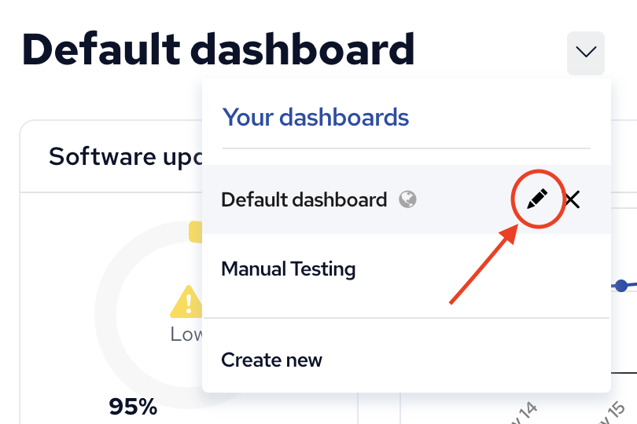
Create an editable copy by clicking the edit button (pencil icon) that appears when you hover over the dashboard's row.
Alert widgets
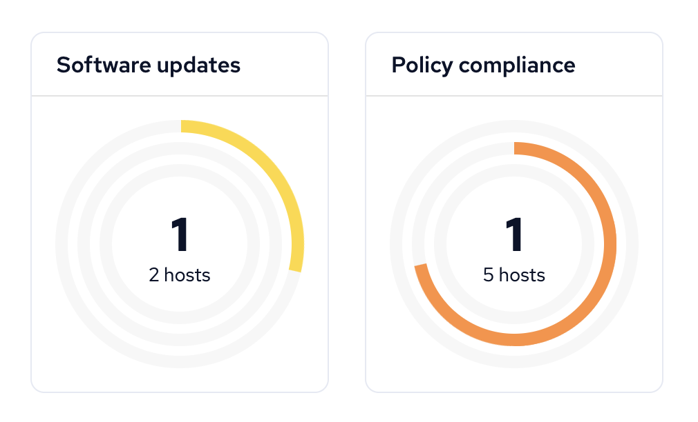
Alerts can have three different severity levels: low, medium and high. These are represented by yellow, orange and red rings respectively, along with the percentage of hosts alerts have triggered on. Hovering over the widget will show the information as text in a convenient list format.
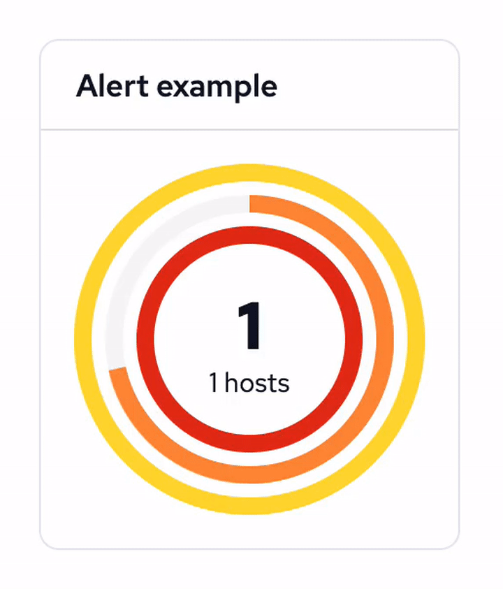
You can pause alerts during maintenance windows or while working on resolving an underlying issue to avoid unnecessary triggering and notifications.
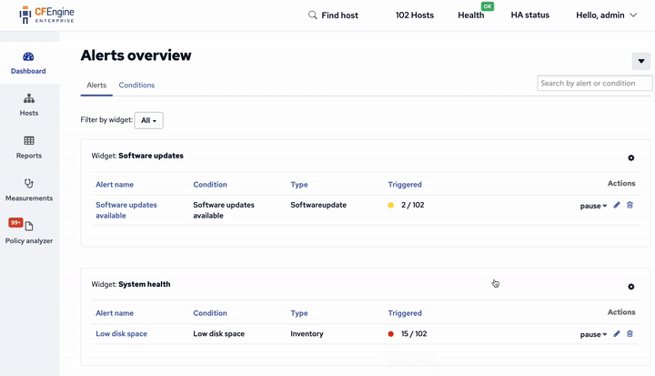
Alerts can have three different states: OK, triggered, and paused. It is easy to filter by state on each widget's alert overview.
Find out more: Alerts and notifications
Changes widget
The changes widget helps to visualize the number of changes (promises repaired)
made by cf-agent.
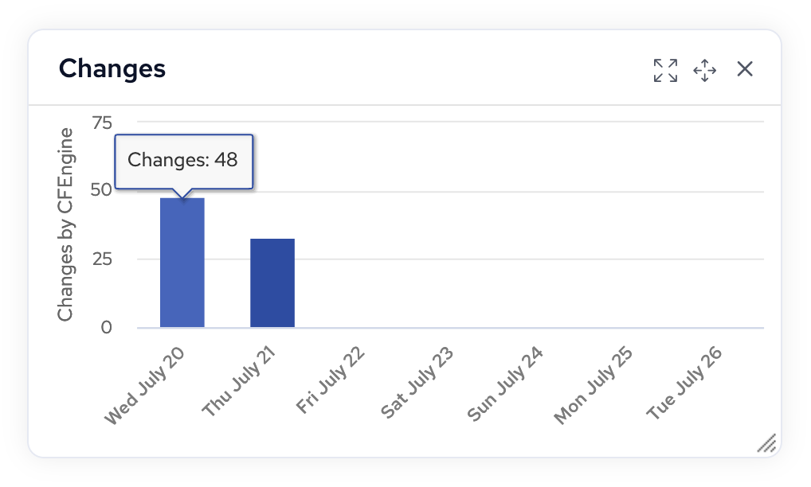
Event log
The Event Log records a time-line of significant events.
Examples of significant events include:
- A new host registering to a hub (aka bootstrapping a host)
- Deleting a host
- Alert status change
Events are accessible from every Mission Portal dashboard. The event log on the dashboard is filtered to show only information relevant based on the widgets present. It shows when alerts are triggered and cleared and when hosts are bootstrapped or decommissioned.
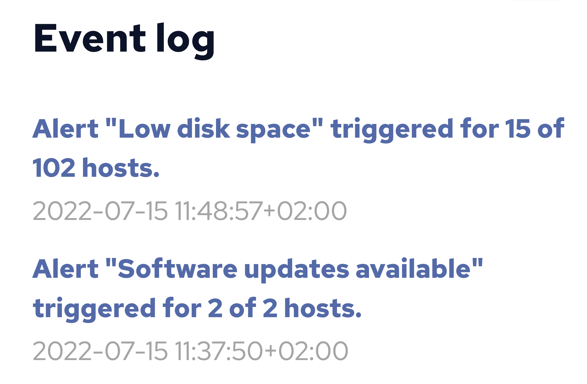
- The Events API Role Based Access Control (RBAC) for
Get event listandGet eventare required to view event log entries.
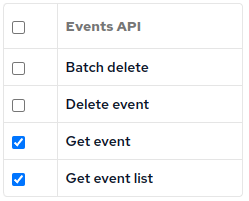
All Events can be searched and viewed from the Event Log page.
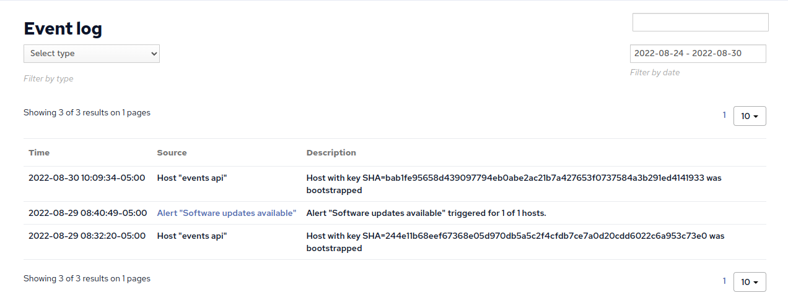
- The Mission Portal RBAC for
View whole system eventsis required to view the Event Log page.
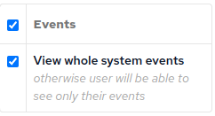
Newly bootstrapped hosts widget
The Newly bootstrapped hosts widget helps to visualize the number of hosts bootstrapped to CFEngine over time.
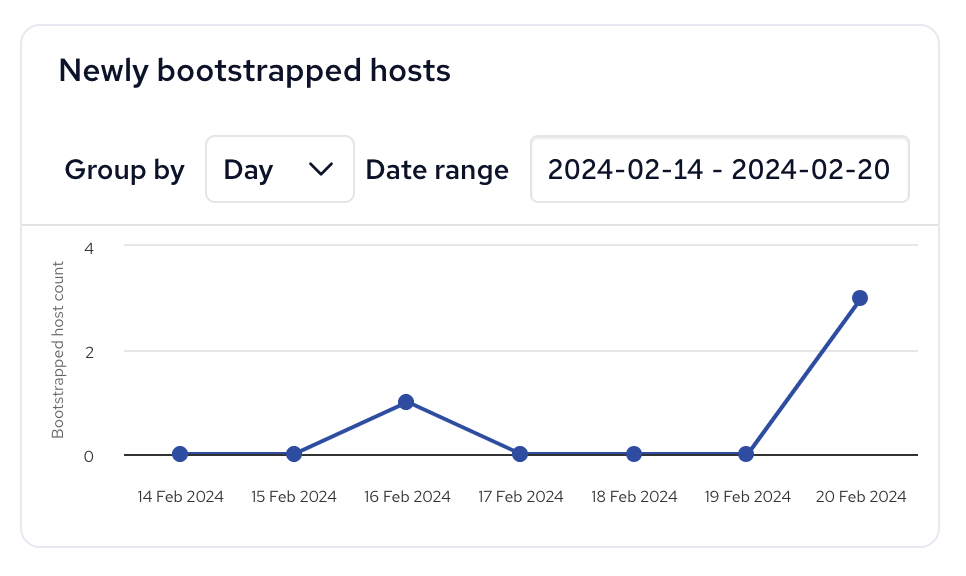
Hosts
CFEngine collects data on promise compliance, and sorts hosts into two categories: 100% compliant, and not.
Find out more: Hosts
Health
Mission Portal highlights potential issues related to the correct function of CFEngine Enterprise.
Find out more: Health
Reporting
Inventory reports allow for quick reporting on out-of-the-box attributes. The attributes are also extensible, by tagging any CFEngine variable or class, such as the role of the host, inside your CFEngine policy. These custom attributes will be automatically added to the Mission Portal.
You can reduce the amount of data or find specific information by filtering on attributes and host groups. Filtering is independent from the data presented in the results table: you can filter on attributes without them being presented in the table of results.
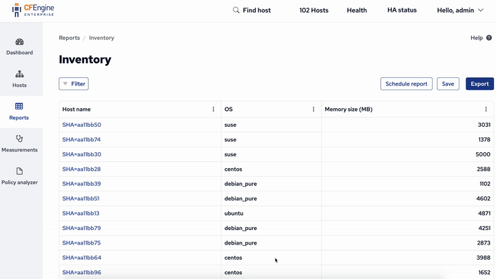
Add and remove columns from the results table in real time, and once you're happy with your report, save it, export it, or schedule it to be sent by email regularly.
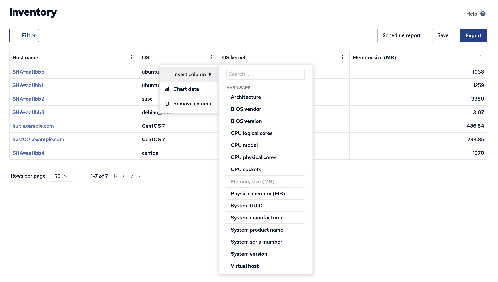
Find out more: Reporting
Follow along in the custom inventory tutorial or read the MPF policy that provides inventory.
Sharing
Dashboards, Host categorization views, and Reports can be shared based on role.
Please note that the logic for sharing based on roles is different than the
logic that controls which hosts a given role is allowed access to data for. When
a Dashboard, Host categorization, or report is shared with a role, anyone having
that role is allowed to access it. For example if a dashboard is shared with the
reporting and admin roles users with either the role reporting or the role
admin are allowed access.
For example:
user1has only thereportingrole.adminhas theadminrole.
If the admin user creates a new dashboard and shares it with the reporting
role, then any user (including user1 ) having the reporting role will be
able to subscribe to the new dashboard. Additionally the dashboard owner in this
case admin also has access to the custom dashboard.
Measurements
Monitoring allows you to get an overview of your hosts over time.
Find out more: Measurements
Settings
A variety of CFEngine and system properties can be changed in the Settings view.
Find out more: Settings
User profile
The user profile is accessible from any view of the mission portal, from the drop down in the top right hand corner.
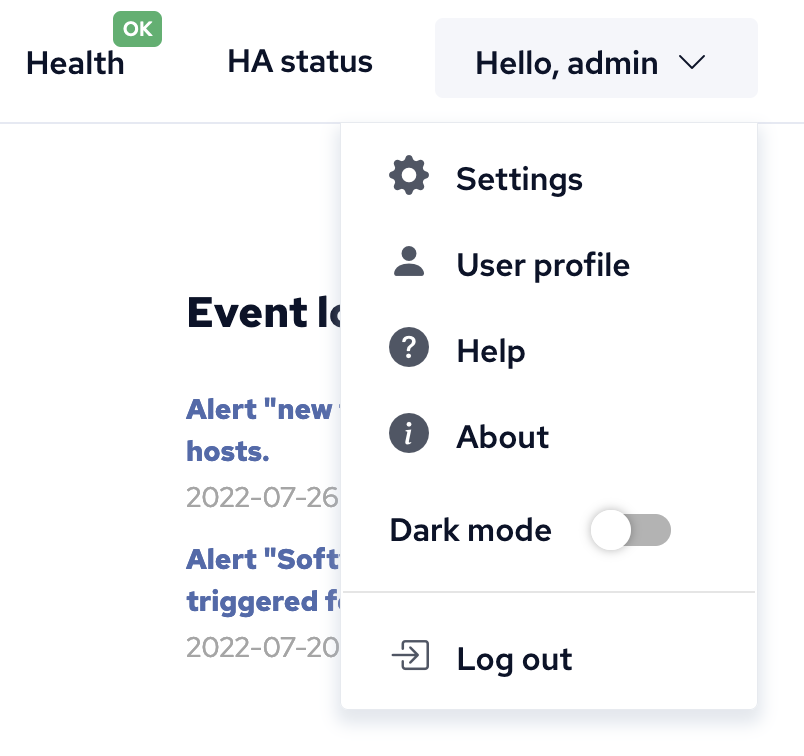
From the profile, you can adjust timezone options.
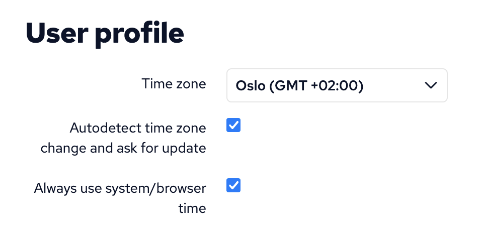
- Time zone
- You can select any time zone from the searchable drop-down.
Autodetect time zone change and ask for update
- If this option is selected Mission portal will ask you to update time zone when a difference is detected from your browser.
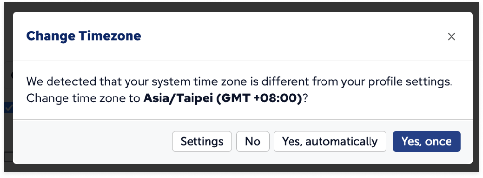
- If this option is selected Mission portal will ask you to update time zone when a difference is detected from your browser.
Always use system/browser time
- Mission portal will automatically change your profile timezone when a system/browser timezone is changed.
License
License information
License information can be obtained from the About page under the user menu.
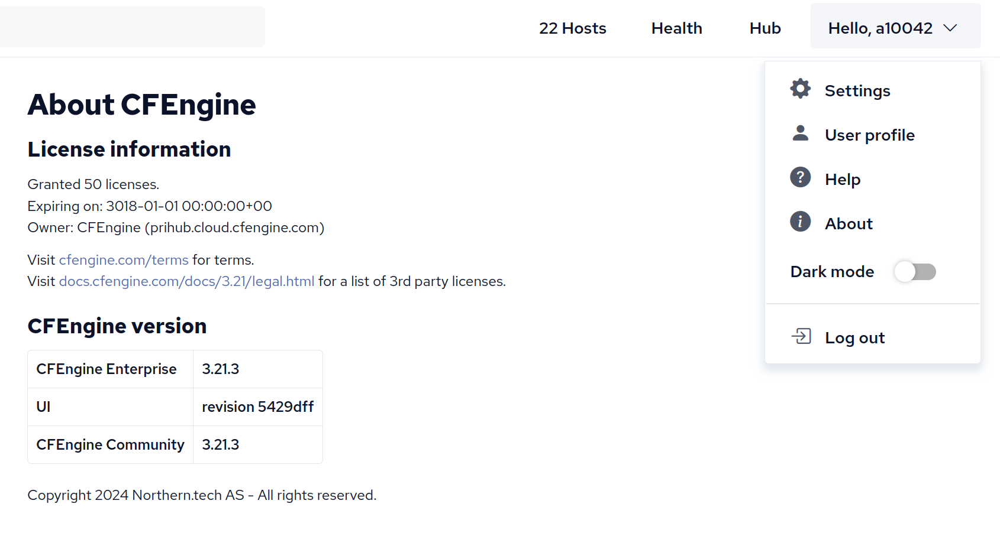
License status report
Click on the host count in the header to open the License Status Report. It contains information about the current license utilization.
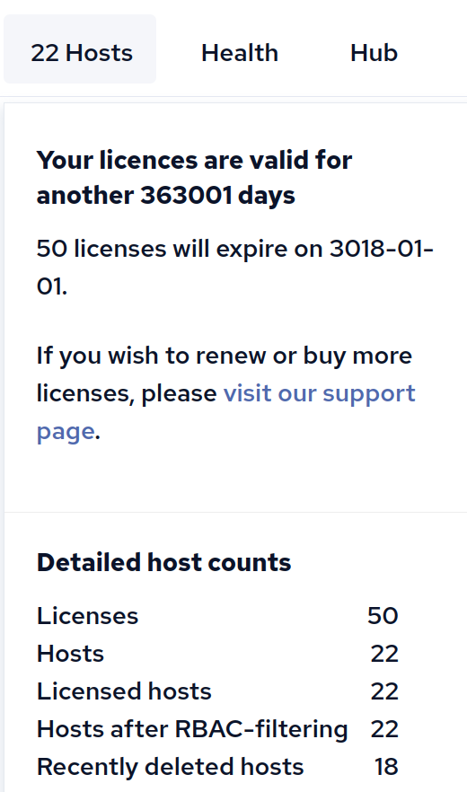
Settings
A variety of CFEngine and system properties can be changed in the settings view.
Opening settings
Settings are accessible from any view of the mission portal, from the drop down in the top right hand corner.
Preferences
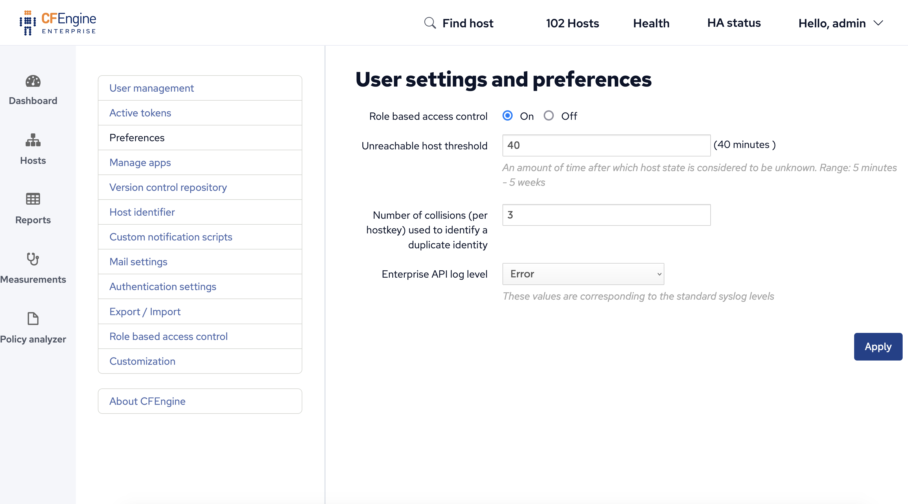
User settings and preferences allows the CFEngine Enterprise administrator to change various options, including:
- Turn on or off RBAC
- When RBAC is disabled any user can see a host that has reported classes
- Note, administrative functions like the ability to delete hosts are not affected by this setting and hosts that have no reported classes are never shown.
- Unreachable host threshold
- Number of samples used to identify a duplicate identity
- Log level
User management
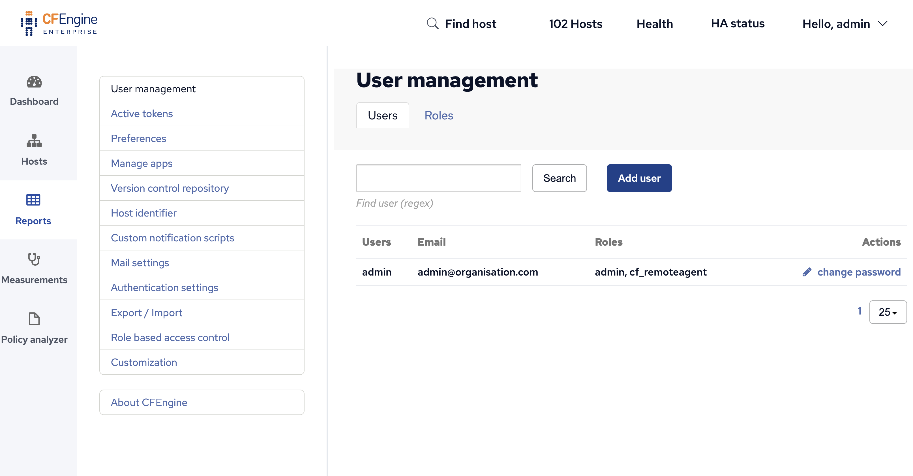
User management is for adding or adjusting CFEngine Enterprise UI users, including their name, role, and password.
Role management
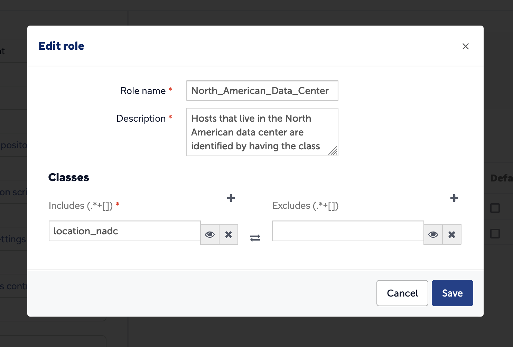
Roles limit access to host data and access to shared assets like saved reports and dashboards.
Roles limit access to which hosts can be seen based on the classes reported by
the host. For example if you want to limit a users ability to report only on
hosts in the "North American Data Center" you could setup a role that includes
only the location_nadc class.
When multiple roles are assigned to a user, the user can access only resources that match the most restrictive role across all of their roles. For example, if you have the admin role and a role that matches zero hosts, the user will not see any hosts in Mission Portal. A shared report will only be accessible to a user if the user has all roles that the report was restricted to.
In order to access a shared reports or dashboard the user must have all roles that the report or dashboard was shared with.
In order to see a host, none of the classes reported by the host can match the class exclusions from any role the user has.
Users without a role will not be able to see any hosts in Mission Portal.
Here is a set of example roles, users and the impact on each user will be able to view.
Example roles
Role suse:
- Class include: SUSE
- Class exclude: empty
Role cfengine_3:
- Class include: cfengine_3
- Class exclude: empty
Role no_windows
- Class include: cfengine_3
- Class exclude: windows
Role windows_ubuntu
- Class include: windows
- Class include: ubuntu
- Class exclude: empty
Example users
User one has role SUSE.
User two has roles no_windows and cfengine_3.
User three has roles windows_ubuntu and no_windows.
What reports each user can view
A report shared with SUSE and no_windows will not be seen by any of the listed users.
A report shared with no_windows and cfengine_3 will only be seen by user two.
A report shared with SUSE will be seen by user one.
Which hosts each user can view
User one will only be able to see hosts that report the SUSE class.
User two will be able to see all hosts that have not reported the windows class.
User three will only be able to see hosts that have reported the ubuntu class.
Predefined roles
admin- The admin role can see everything and do anything.cf_remoteagent- This role allows execution ofcf-runagent.
Default role
To set the default role, click Settings -> User management -> Roles. You can then select which role will be the default role for new users.
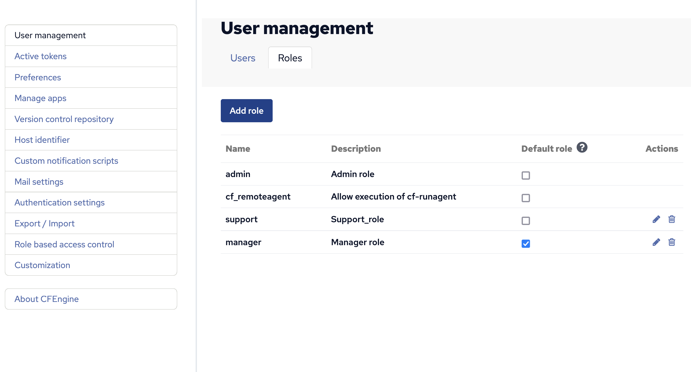
Behaviour of default role:
Any new users created in Mission Portal's local user database will have this new role assigned.
Users authenticating through LDAP (if you have LDAP configured in Mission Portal) will get this new role applied the first time they log in.
Note that the default role will not have any effect on users that already exist (in Mission Portal's local database) or have already logged in (when using LDAP).
In effect this allows you to set the default permissions for new users (e.g. which hosts a user is allowed to see) by configuring the access for the default role.
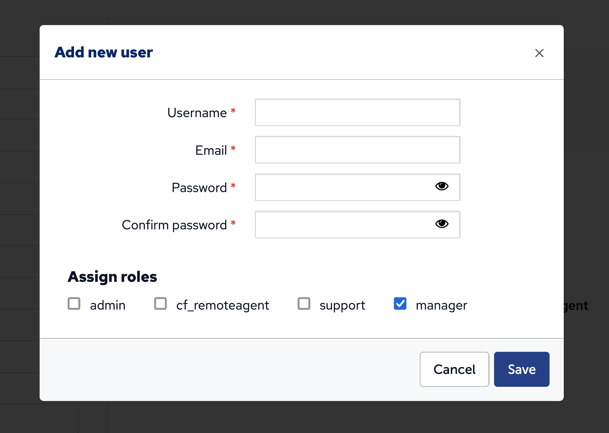
Manage apps
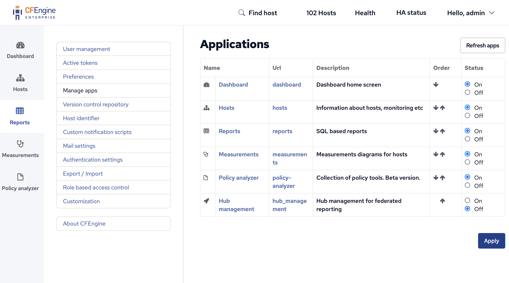
Application settings can help adjust some of CFEngine Enterprise UI app features, including the order in which the apps appear and their status (on or off).
Version control repository
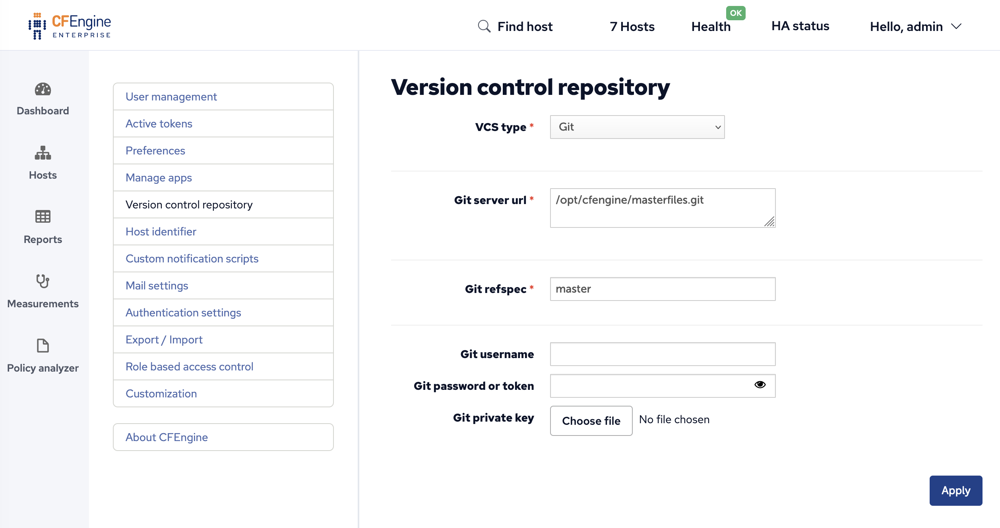
The repository holding the organization's masterfiles can be adjusted on the Version control repository screen.
Host identifier
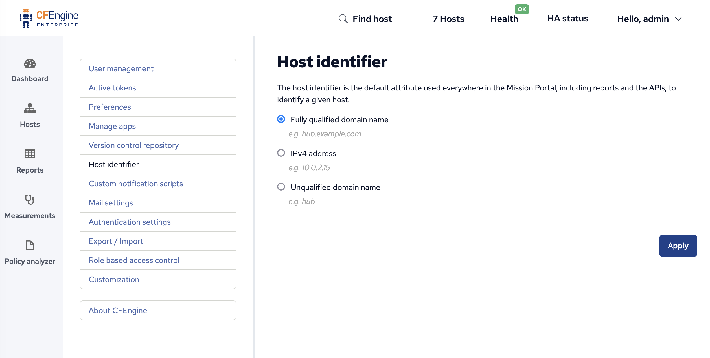
Host identity for the server can be set within settings, and can be adjusted to refer to the FQDN, IP address, or an unqualified domain name.
Mail settings
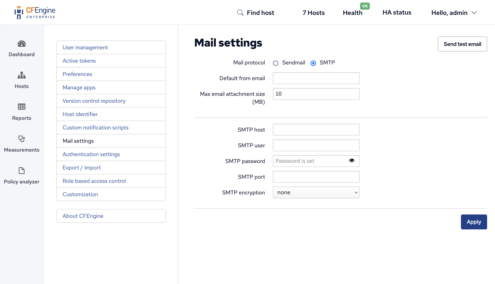
Configure outbound mail settings:
Default from email : Email address that Mission Portal will use by default when sending emails.
Mail protocol : Use the system mailer (Sendmail) or use an SMTP server.
Max email attachment size (MB) : mails sent by Mission Portal with attachments exceeding this will have the attachment replaced with links to download the large files.
Authentication settings
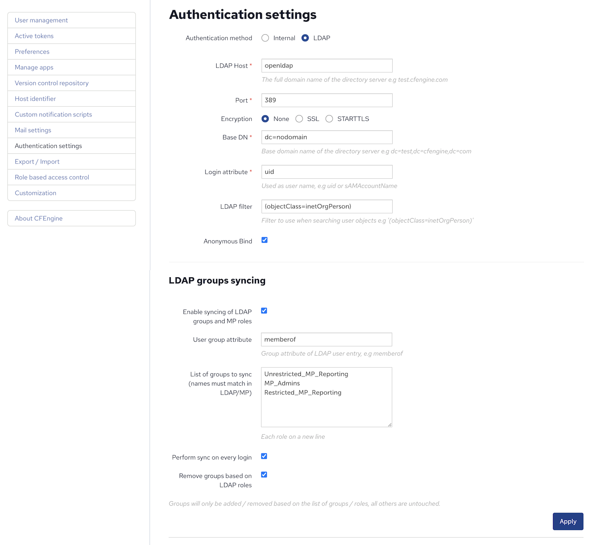
Mission portal can authenticate against an external directory.
Special notes:
- LDAP Host refers is the IP or Hostname of your LDAP server.
- LDAP filter must be supplied.
LDAP bind username should be the username used to bind and search the LDAP directory. It must be provided in distinguished name format. Additionally, you can bind anonymously.
Default roles for users is configured under Role management.
LDAP groups syncing
LDAP group syncing can be turned on by clicking the corresponding checkbox
- User group attribute must be provided to obtain groups from an LDAP user entity.
The default value for Active Directory is
memberOf. The group name will be taken fromcnattribute - List of groups to sync, names must match in LDAP/MP. Each role should be added on a new line.
- Click
Perform sync on every logincheckbox to synchronize user roles on every login, otherwise roles will be assigned to a user only on sign-up (first login).
- User group attribute must be provided to obtain groups from an LDAP user entity.
The default value for Active Directory is
Note: Roles must be created in Mission Portal. Enabling LDAP group sync will not result in addition or removal of Mission Portal roles.
See also: LDAP authentication REST API, Role management
Export/import
Mission Portal's configuration can be exported and imported.
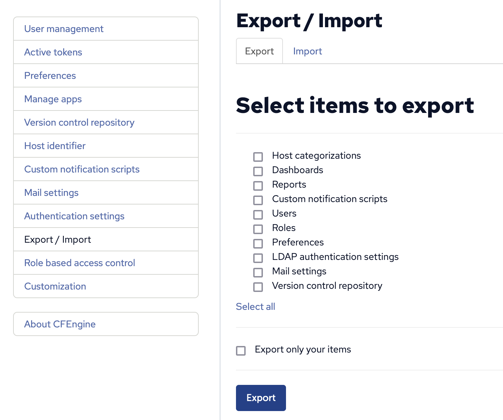
See also: Export/import API
Role based access control
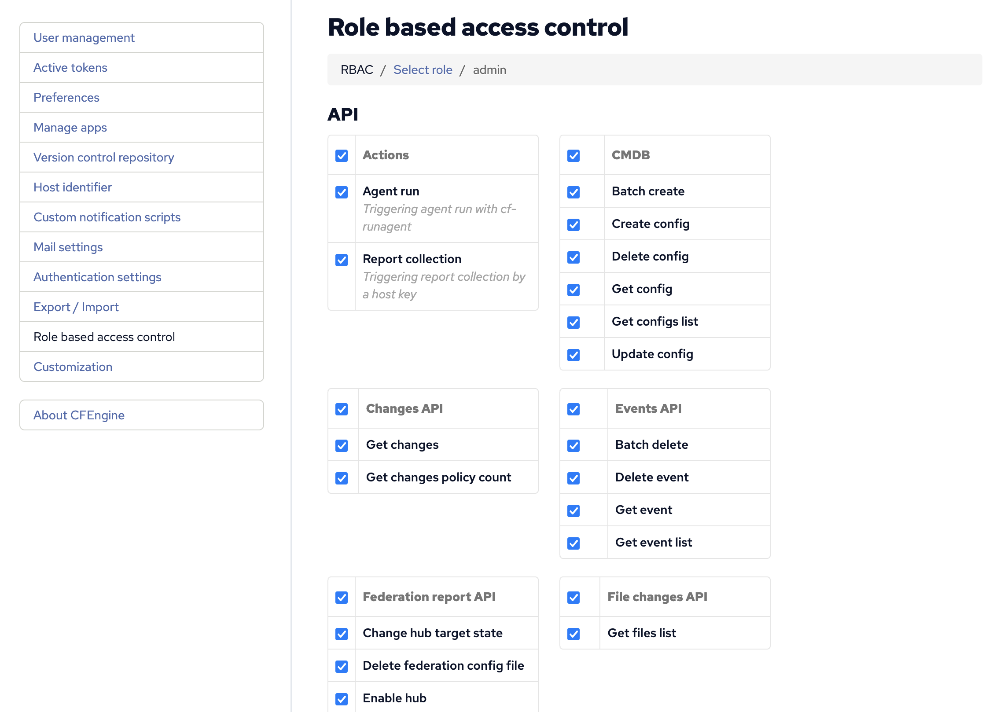
Roles in Mission portal can be restricted to perform only configured actions. Configure role-based access controls from settings.
Special notes:
Admin role has all permissions by default.
Cf_remoteagent role has all permissions related to API by default.
Permissions granted by roles are additive, users with multiple roles are permitted to perform actions granted by each role.
Restore admin role permissions:
To restore the CFEngine admin role permissions run the following sql as root on your hub
/var/cfengine/bin/psql cfsettings -c "INSERT INTO rbac_role_permission (role_id, permission_alias) (SELECT 'admin'::text as role_id, alias as permission_alias FROM rbac_permissions) ON CONFLICT (role_id, permission_alias) DO NOTHING;"
See also: Web RBAC API
About CFEngine
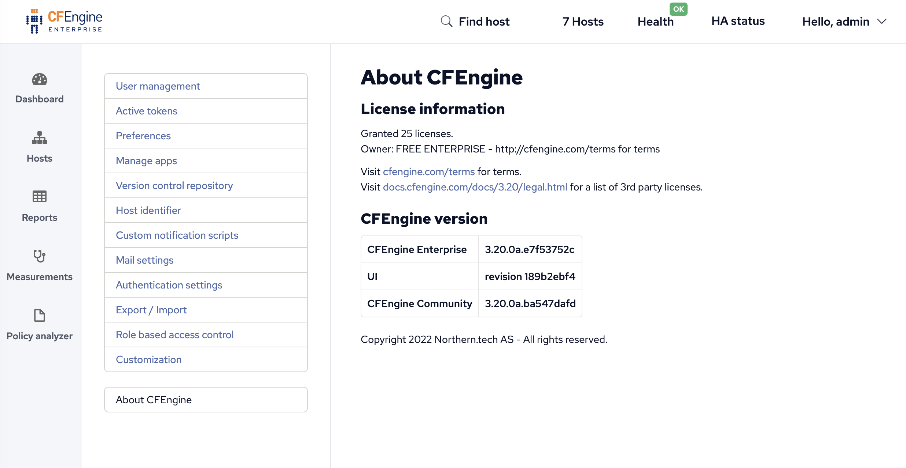
The About CFEngine screen contains important information about the specific version of CFEngine being used, license information, and more.
Health
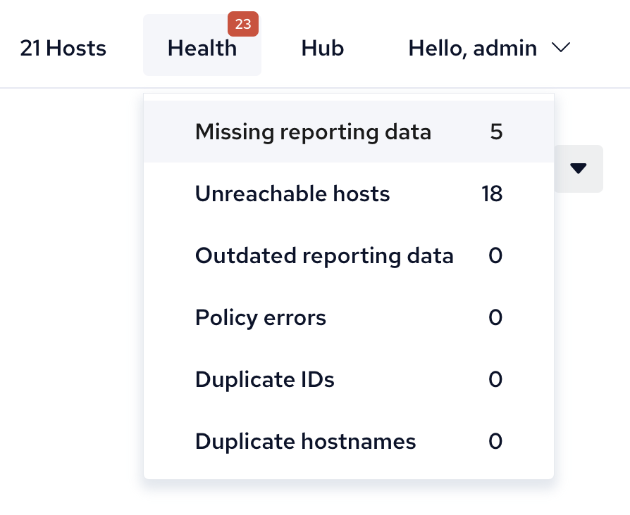
You can get quick access to the health of hosts, including direct links to reports, from the Health drop down at the top of every Enterprise UI screen. Hosts are listed as unhealthy if:
- Missing reporting data : Host has connected to hub (to get policy), but reports have never been collected from it.
- Unreachable hosts : Reports from host has been collected in the past, but not recently (as defined by "Unreachable host threshold").
- Outdated reporting data : The host is communicating correctly and sending its reports, but the data is outdated (there are no recent reports), indicating that there hasn't been any policy runs recently (performed by the cf-agent binary). There is no data to prove that your policy, describing your desired state, is being successfully enforced.
- Policy errors : Reports have recently been collected and cf-agent has completed a run with an error.
- Duplicate IDs : CFEngine hosts are identified by the CFEngine key they use. If two or more hosts use the same key the reports will be very unreliable. This is detected by exchanging randomized cookies(tokens) during report collections. If a client sends a mismatching cookie (compared to last collection), it indicates that multiple hosts are using the same ID.
- Duplicate hostnames: multiple host identities reporting the same host identifier (by default hostname derived from
default:sys.fqhostvariable but changeable in Settings -> Host identifier)
These categories are non-overlapping, meaning a host will only appear in one category at at time even if conditions satisfying multiple categories might be present. This makes reports simpler to read, and makes it easier to detect and fix the root cause of the issue. As one issue is resolved the host might then move to another category. Regardless of the situation, the data from the host will be from the latest report collection, representing the most recent known state of the host.
Hosts
The Hosts app provides a customizable global overview of promise compliance. A summary of compliant vs non-compliant hosts is provided at each branch in the tree.
Each host is in one of two groups: out of compliance or fully compliant.
- A host is considered out of compliance if less than 100% of its promises were kept.
- A host is considered fully compliant if 100% of its promises were kept.
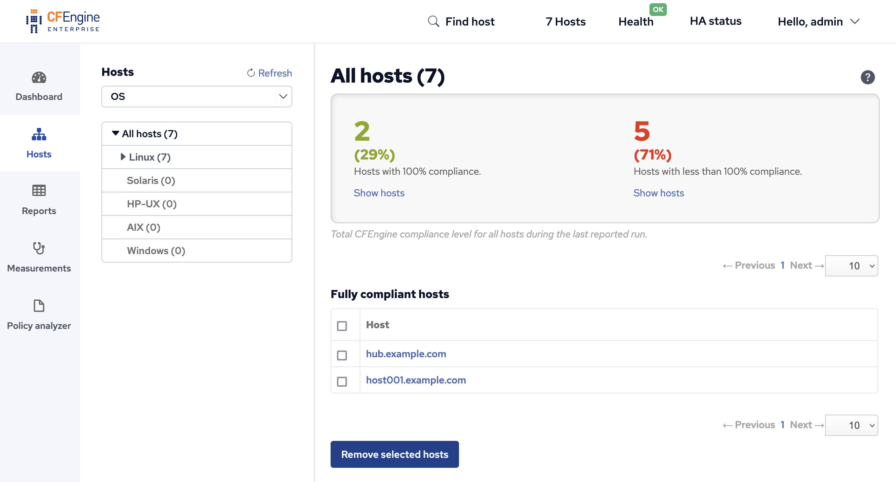
A host tree based on OS (Operating system) is present by default. Host trees map hosts based on reported classes into a hierarchy. Additional host trees can be added based on classes, which could be used to view different perspectives such as geographic location, production tier, business unit, etc. Furthermore, each host tree can be shared based on Mission Portal role.
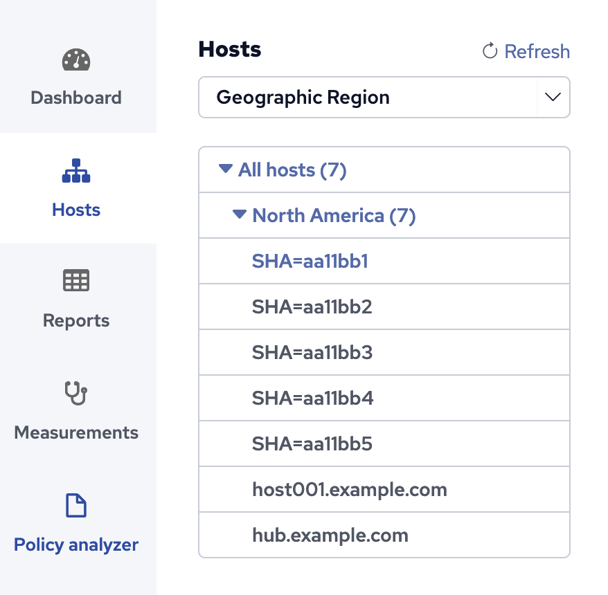
Visiting a leaf node provides a summary of host specific information.
Host info
The host info page provides extensive information for an individual host.
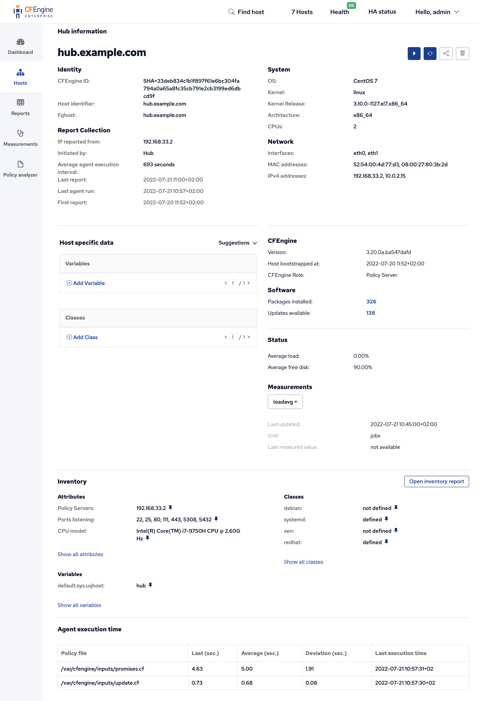
Host actions
Take action on a host.
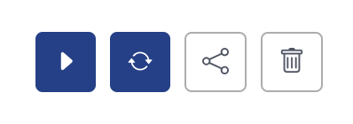
- :: Request an unscheduled policy run
- :: Request report collection
- :: Get the URL to the specific hosts info page
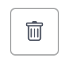
:: Delete the host
Host specific data
Assign host specific Variables and Classes.
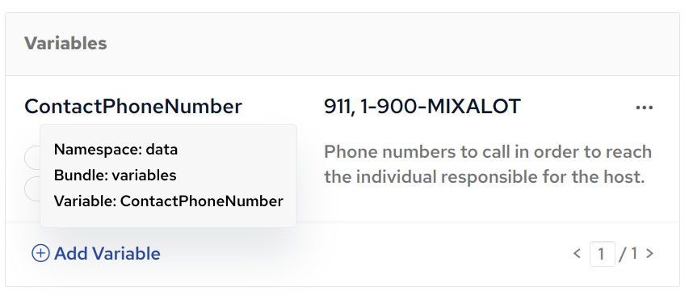
Note: When defined via host specific data, variables default to the variables bundle of the data namespace. Qualify the variable with the desired bundle and namespace to override the default. For example my_bundle.myvariable to define my_bundle.myvariable in the data namespace, or my_namespace:my_bundle.myvariable to define myvariable in the my_bundle bundle of the my_namespace namespace.
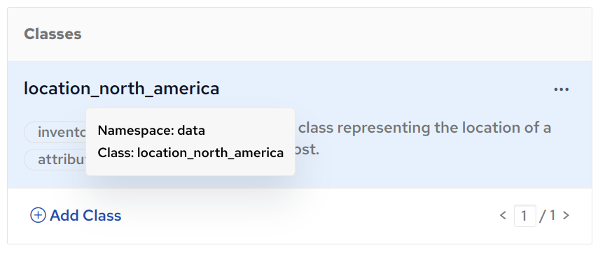
Note: When defined via host specific data classes default to the data namespace. Qualify the class with the desired namespace to override the default. For example default:my_class, or my_namespace:my_class.
Alerts and notifications
Create a new alert
From the Dashboard, locate the rectangle with the dotted border.
When the cursor is hovering over top, an Add button will appear.
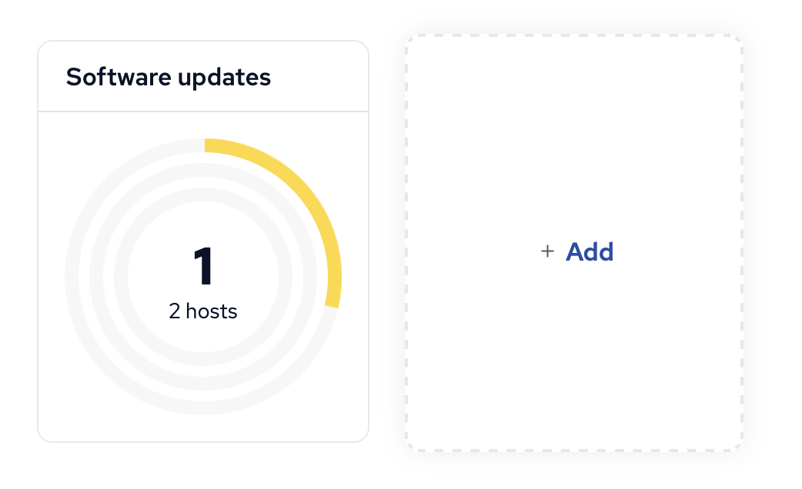
- Click the button to begin creating the alert.
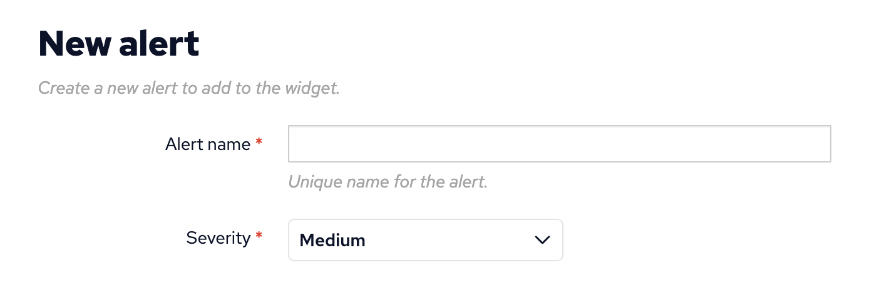
Add a unique name for the alert.
Each alert has a visual indication of its severity, represented by one of the following colors:
- Low: Yellow
- Medium: Orange
- High: Red
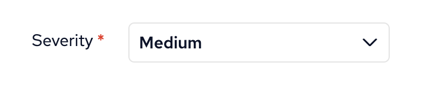
From the Severity dropdown box, select one of the three options available.
The Select Condition drop down box represents an inventory of existing conditional rules, as well as an option to create a new one
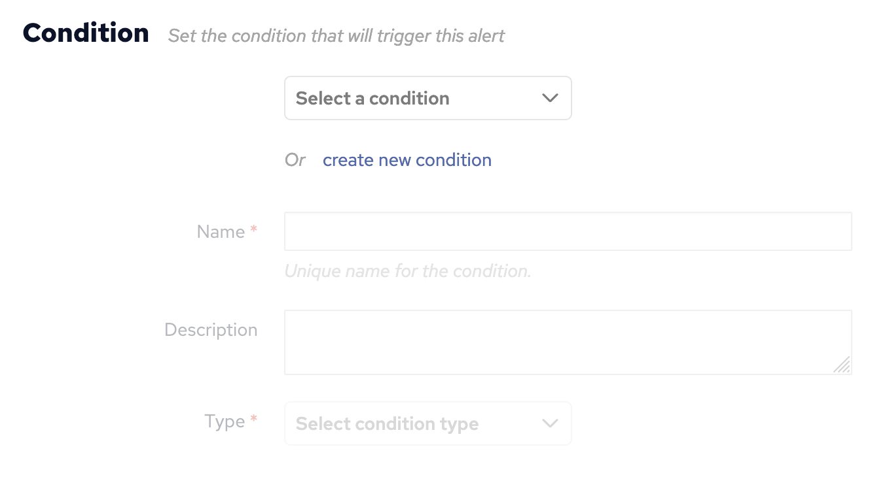
When selecting an existing conditional rule, the name of the condition will automatically populate the mandatory condition Name field.
When creating a new condition the Name field must be filled in.
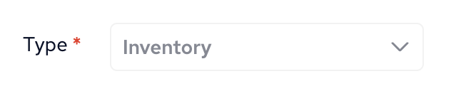
Each alert also has a Condition type:
- Policy conditions trigger alerts based on CFEngine policy compliance status. They can be set on bundles, promisees, and promises. If nothing is specified, they will trigger alerts for all policy.
- Inventory conditions trigger alerts for inventory attributes. These attributes correspond to the ones found in inventory reports.
- Software Updates conditions trigger alerts based on packages available for update in the repository. They can be set either for a specific version or trigger on the latest version available. If neither a package nor a version is specified, they will trigger alerts for any update.
- Custom SQL conditions trigger alerts based on an SQL query. The SQL query must returns at least one column -
hostkey.
Alert conditions can be limited to a subset of hosts.
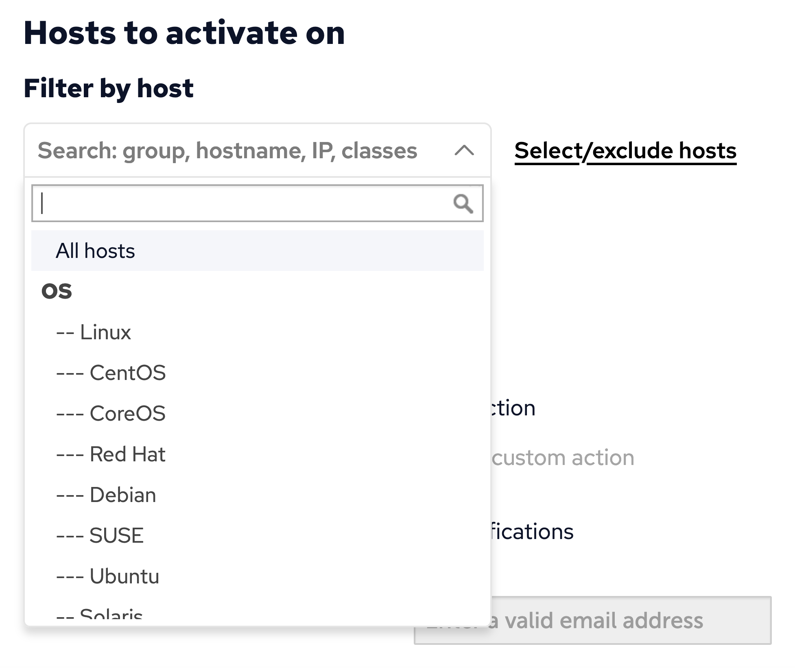
- Notifications of alerts may be sent by email or custom action scripts.
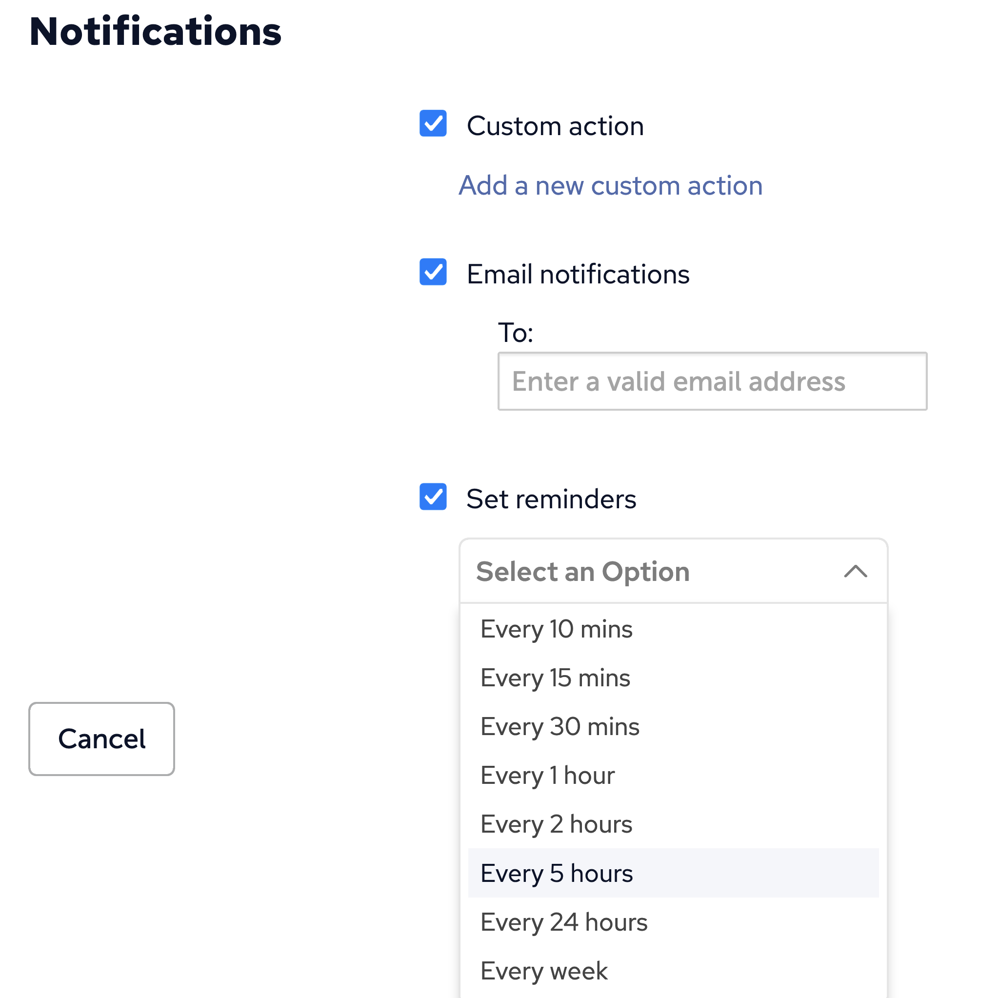
Check Email notifications box to activate the field for entering the email address to notify.
The Remind me dropdown box provides a selection of intervals to send reminder emails for triggered events.
Enterprise reporting
CFEngine Enterprise can report on promise outcomes (changes made by cf-agent
across your infrastructure), variables, classes, and measurements taken by
cf-monitord. Reports cover fine grained policy details, explore all the
options by checking out the custom reports section
of the Enterprise reporting module.
Specifically which information allowed to be collected by the hub for reporting
is configured by report_data_select bodies.
default_data_select_host() defines the data to be collected for a non policy hub
and default_data_select_policy_hub() defines the data that should be collected
for a policy hub.
Controlling which variables and classes should be collected by an Enterprise Hub
is done primarily with a list of regular expressions matching promise meta tags
for either inclusion or
exclusion. cf-hub collects variables that have
meta tags matching metatags_include and do not have
any meta tags matching metatags_exclude and does
not have a handle matching
promise_handle_exclude. cf-hub collects
namespace scoped (global) classes having any meta tags matching
metatags_include that do not have any meta tags
matching metatags_exclude.
Instead of modifying the list of regular expressions to control collection, we
recommend that you leverage the defaults provided by the MPF (Masterfiles Policy
Framework). The MPF includes inventory and report in
metatags_include, noreport in
metatags_exclude and noreport_.* in
promise_handle_exclude.
If it's desirable for the classes and variables to be available in specialized
inventory subsystem then it should be tagged with inventory and given an
additional attribute_name= tag as described in the custom inventory example.
cf-hub collects information resulting from all other promise types (except
reports, and defaults which cf-hub does not collect for). This can be
further restricted by specifying
promise_handle_include or
promise_handle_exclude.
Collection of measurements taken by cf-monitord are is controlled using the
monitoring_include and monitoring_exclude report_data_select body
attributes.
Limitations:
There are various limitations with regard to the size of information that is collected into central reporting. Data that is too large to be reported will be truncated and a verbose level log message will be generated by cf-agent. Some noteable limitations are listed below.
- string variables are limited to 1024 bytes
- lists are limited to 1024 bytes of serialized data
- data variables are limited to 1024 bytes of serialized data
- meta tags limited to 1024 bytes of serailized output
- log messages are truncated to 400 bytes
Please note that these limits may be lower in practice due to internal encoding.
Users can not configure the data is stored to disk. For example, you can not
prevent the enterprise agent from logging to promise_log.jsonl.
For information on accessing reported information please see the Reporting UI guide.
Reporting architecture
The reporting architecture of CFEngine Enterprise uses two software components from the CFEngine Enterprise hub package.
cf-hub
Like all CFEngine components, cf-hub is
located in /var/cfengine/bin. It is a daemon process that runs in the
background, and is started by cf-agent and from the init scripts.
cf-hub wakes up every 5 minutes and connects to the cf-serverd of
each host to download new data.
To collect reports from any host manually, run the following:
/var/cfengine/bin/cf-hub -H <host IP>
Add
-vto run in verbose mode to diagnose connectivity issues and trace the data collected.Delta (differential) reporting, the default mode, collects data that has changed since the last collection. Rebase (full) reports collect everything. You can choose the full collection by adding
-q rebase(for backwards comapatibility, also available as-q full).
Apache
REST over HTTP is provided by the
Apache http server which also hosts the
Mission Portal. The httpd process is started through CFEngine policy
and the init scripts and listens on ports 80 and 443 (HTTP and HTTP/S).
Apache is part of the CFEngine Enterprise installation in
/var/cfengine/httpd. A local cfapache user is created with
privileges to run cf-runagent.
SQL queries using the Enterprise API
The CFEngine Enterprise Hub collects information about the environment in a centralized database. Data is collected every 5 minutes from all bootstrapped hosts. This data can be accessed through the Enterprise reporting API.
Through the API, you can run CFEngine Enterprise reports with SQL queries. The API can create the following report queries:
- Synchronous query: Issue a query and wait for the table to be sent back with the response.
- Asynchronous query: A query is issued and an immediate response with an ID is sent so that you can check the query later to download the report.
- Subscribed query: Specify a query to be run on a schedule and have the result emailed to someone.
Synchronous queries
Issuing a synchronous query is the most straightforward way of running an SQL query. We simply issue the query and wait for a result to come back.
Request:
curl -k --user admin:admin https://test.cfengine.com/api/query -X POST -d
{
"query": "SELECT ..."
}
Response:
{
"meta": {
"page": 1,
"count": 1,
"total": 1,
"timestamp": 1351003514
},
"data": [
{
"query": "SELECT ...",
"header": [
"Column 1",
"Column 2"
],
"rowCount": 3,
"rows": [
]
"cached": false,
"sortDescending": false
}
]
}
Asynchronous queries
Because some queries can take some time to compute, you can fire off a query and check the status of it later. This is useful for dumping a lot of data into CSV files for example. The sequence consists of three steps:
- Issue the asynchronous query and get a job id.
- Check the processing status using the id.
- When the query is completed, get a download link using the id.
Issuing the query
Request:
curl -k --user admin:admin https://test.cfengine.com/api/query/async -X POST -d
{
"query": "SELECT Hosts.HostName, Hosts.IPAddress FROM Hosts JOIN Contexts ON Hosts.Hostkey = Contexts.HostKey WHERE Contexts.ContextName = 'ubuntu'"
}
Response:
{
"meta": {
"page": 1,
"count": 1,
"total": 1,
"timestamp": 1351003514
},
"data": [
{
"id": "32ecb0a73e735477cc9b1ea8641e5552",
"query": "SELECT ..."
}
]
]
Checking the status
Request:
curl -k --user admin:admin https://test.cfengine.com/api/query/async/:id
Response:
{
"meta": {
"page": 1,
"count": 1,
"total": 1,
"timestamp": 1351003514
},
"data": [
{
"id": "32ecb0a73e735477cc9b1ea8641e5552",
"percentageComplete": 42,
]
}
Getting the completed report
This is the same API call as checking the status. Eventually, the percentageComplete field will reach 100 and a link to the completed report will be available for downloading.
Request:
curl -k --user admin:admin https://test.cfengine.com/api/query/async/:id
Response:
{
"meta": {
"page": 1,
"count": 1,
"total": 1,
"timestamp": 1351003514
},
"data": [
{
"id": "32ecb0a73e735477cc9b1ea8641e5552",
"percentageComplete": 100,
"href": "https://test.cfengine.com/api/static/32ecb0a73e735477cc9b1ea8641e5552.csv"
}
]
}
Subscribed Queries
Subscribed queries happen in the context of a user. Any user can create a query on a schedule and have it emailed to someone.
Request:
curl -k --user admin:admin https://test.cfengine.com/api/user/name/
subscription/query/file-changes-report -X PUT -d
{
"to": "email@domain.com",
"query": "SELECT ...",
"schedule": "Monday.Hr23.Min59",
"title": "Report title"
"description": "Text that will be included in email"
"outputTypes": [ "pdf" ]
}
Response:
204 No Content
Reporting UI
CFEngine collects a large amount of data. To inspect it, you can run and schedule pre-defined reports or use the query builder for your own custom reports. You can save these queries for later use, and schedule reports for specified times.
If you are familiar with SQL syntax, you can input your query into the interface directly. Make sure to take a look at the database schema. Please note: manual entries in the query field at the bottom of the query builder will invalidate all field selections and filters above, and vice-versa.
You can share the report with other users - either by using "Save" button, or by base64-encoding the report query into a URL. You can also provide an optional title by adding title parameter to the URL, like this:
HUB_URL="https://hub"
API="/index.php/advancedreports/#/report/run?sql="
SQL_QUERY="SELECT Hosts.HostName AS 'Host Name' FROM Hosts"
REPORT_TITLE="Example Report"
LINK="${HUB_URL}${API}$(echo ${SQL_QUERY} | base64)&title=$(/usr/bin/urlencode ${REPORT_TITLE})"
echo "${LINK}"
https://hub/index.php/advancedreports/#/report/run?sql=U0VMRUNUIEhvc3RzLkhvc3ROYW1lIEFTICdIb3N0IE5hbWUnIEZST00gSG9zdHMK&title=Example%20Report
You can query fewer hosts with the help of filters above the displayed table. These filters are based on the same categorization you can find in the other apps.
You can also filter on the type of promise: user defined, system defined, or all.
See also:
Query builder
Users not familiar with SQL syntax can easily create their own custom reports in this interface. Please note that query builder can be extended with your custom data.
- Tables - Select the data tables you want include in your report first.
- When more than one table is selected the Query builder opens modal window to select the (join strategy between tables):
- Main table - the main data source, other tables will be connected to it.
- Extend main table (left join) - returns all records from the main table, and the matched records from the joined table.
- Include only common rows (inner join) - returns records from the main table that intersect the joined table. Useful for filtering, in the case where you have custom views that have pre-filtered hosts. For example, web_servers - a custom view that contains hostkeys of hosts that are web servers.
- When more than one table is selected the Query builder opens modal window to select the (join strategy between tables):
- Fields - Define your table columns based on your selection above.
- Filters - Filter your results. Remember that unless you filter, you may be querying large data sets, so think about what you absolutely need in your report.
- Group - Group your results. May be expensive with large data sets.
- Sort - Sort your results. May be expensive with large data sets.
- Limit - Limit the number of entries in your report. This is a recommended practice for testing your query, and even in production it may be helpful if you don't need to see every entry.
- Show me the query - View and edit the SQL query directly. Please note, that editing the query directly here will invalidate your choices in the query builder interface, and changing your selections there will override your SQL query.
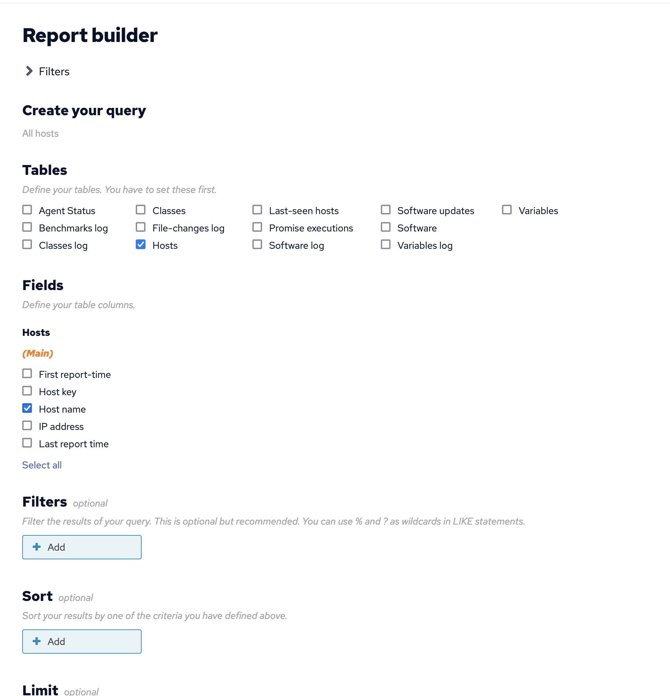
Ensure the report collection is working
- The reporting bundle must be called from
promises.cf. For example, the following defines the attributeRolewhich is set todatabase_server. You need to add it to the top-levelbundlesequenceinpromises.cfor in a bundle that it calls.
bundle agent myreport
{
vars:
"myrole"
string => "database_server",
meta => { "inventory", "attribute_name=Role" };
}
note the
metataginventoryThe hub must be able to collect the reports from the client. TCP port 5308 must be open and, because 3.6 uses TLS, should not be proxied or otherwise intercepted. Note that bootstrapping and other standalone client operations go from the client to the server, so the ability to bootstrap and copy policies from the server doesn't necessarily mean the reverse connection will work.
Ensure that variables and classes tagged as
inventoryorreportare not filtered bycontrols/cf_serverd.cfin your infrastructure. The standard configuration from the stock CFEngine packages allows them and should work.
Note: The CFEngine report collection model accounts for long periods of time when the hub is unable to collect data from remote agents. This model preserves data recorded until it can be collected. Data (promise outcomes, etc ...) recorded by the agent during normal agent runs is stored locally until it is collected from by the cf-hub process. At the time of collection the local data stored on the client is cleaned up and only the last hours worth of data remains client. It is important to understand that the time between hub collection and number of clients that are unable to be collected from grows the amount of data to transfer and store in the central database also grows. A large number of clinets that have not been collected from that become available at once can cause increased load on the hub collector and affect its performance until it has been able to collect from all hosts.
Define a new single table report
- In Mission Portal select the Report application icon on the left hand side of the screen.
- This will bring you to the Report builder screen.
- The default for what hosts to report on is All hosts. The hosts can be filtered under the Filters section at the top of the page.
- For this tutorial leave it as All hosts.
- Set which tables' data we want reports for.
- For this tutorial select Hosts.
- Select the columns from the Hosts table for the report.
- For this tutorial click the Select all link below the column lables.
- Leave Filters, Sort, and Limit at the default settings.
- Click the orange Run button in the bottom right hand corner.
Check report results
- The report generated will show each of the selected columns across the report table's header row.
- In this tutorial the columns being reported back should be: Host key, Last report time, Host name, IP address, First report-time.
- Each row will contain the information for an individual data record, in this case one row for each host.
- Some of the cells in the report may provide links to drill down into more detailed information (e.g. Host name will provide a link to a Host information page).
- It is possible to also export the report to a file.
- Click the orange Export button.
- You will then see a Report Download dialog.
- Report type can be either csv or pdf format.
- Leave other fields at the default values.
- If the server's mail configuration is working properly, it is possible to email the report by checking the Send in email box.
- Click OK to download or email the csv or pdf version of the report.
- Once the report is generated it will be available for download or will be emailed.
Inventory management
Inventory allows you to define the set of hosts to report on.
The main Inventory screen shows the current set of hosts, together with relevant information such as operating system type, kernel and memory size.
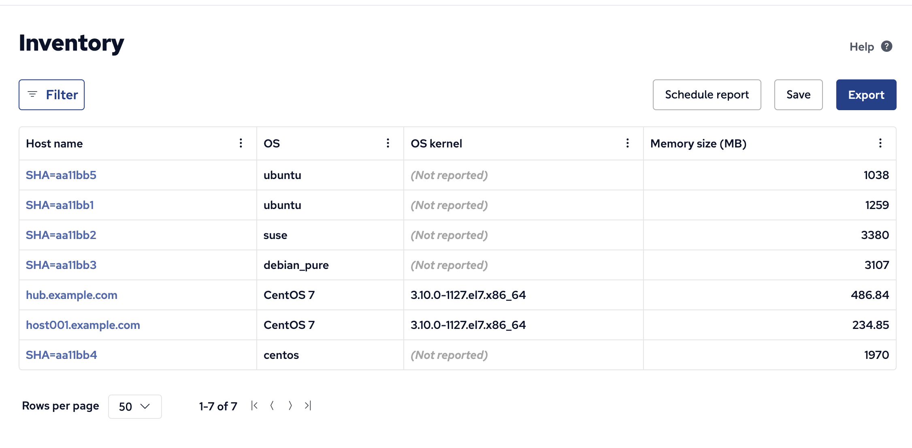
To begin filtering, one would first select the Filters drop down, and then select an attribute to filter on (e.g. OS type = linux)
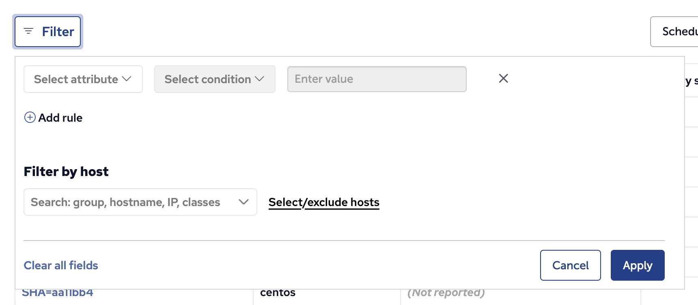
After applying the filter, it may be convenient to add the attribute as one of the table columns.
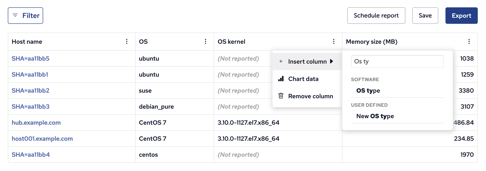
Changing the filter, or adding additional attributes for filtering, is just as easy.
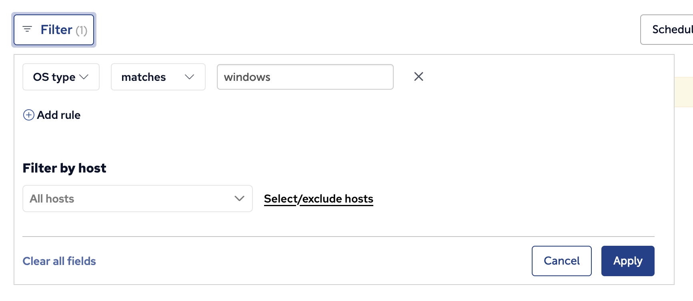
We can see here that there are no Windows machines bootstrapped to this hub.
Client initiated reporting / call collect
Pull collect is the default mode of reporting. In this mode, the reporting hub connects out to hosts to pull reporting data.
In call collect mode, clients initiate the reporting connection, by "calling" the hub first. The hub keeps the connection open and collects the reports when it's ready. Call collect is especially useful in environments where agents cannot be reached from the hub. This could be because of NAT (routes) or firewall rules.
Call collect and Client Initiated Reporting are the same, they both refer to the same functionality.
How do you enable call collect?
The easiest way to enable call collect is via augments files, modify /var/cfengine/masterfiles/def.json on the hub:
{
"classes": {
"client_initiated_reporting_enabled": [ "any" ]
},
"vars": {
"mpf_access_rules_collect_calls_admit_ips": [ "0.0.0.0/0" ],
"control_hub_exclude_hosts": [ "0.0.0.0/0" ]
}
}
Client initiated reporting will be enabled on all hosts, since all hosts have the any class set.
mpf_access_rules_collect_calls_admit_ips controls what network range clients are allowed to connect from.
This should be customized to your environment.
control_hub_exclude_hosts will exclude the IPs in the network range(s) from pull collection.
This network range should usually match the one above.
Trying to use both pull and call collect for the same host can cause problems and unnecessary load on the hub.
See also: call_collect_interval, collect_window
When are hosts collected from? How is collection affected by hub interval?
Call collect hosts are handled as soon as possible.
Agents initiate connections according to their own schedule, and the hub handles them as quickly as possible.
There is a separate call collect thread which waits for incoming connections, and queues them.
Whenever a thread in the cf-hub thread pool is available, it will prioritize the call collect queue before the pull queue.
Neither the call collect thread nor the worker thread pool are affected by the hub reporting schedule (hub_schedule).
How can I see which hosts are call collected?
This is recorded in the PostgreSQL database on the hub, and can be queried from command line:
/var/cfengine/bin/psql -d cfdb -c "SELECT * FROM __hosts WHERE iscallcollected='t'";
Are call collect hosts counted for enterprise licenses?
Yes, call collect hosts consume a license.
If you have too many hosts (pull + call) for your license, cf-hub will start emitting errors, and skip some hosts.
cf-hub prioritizes call collect hosts, and will only skip pull collect hosts when over license.
Note that in other parts of the product, like Mission Portal, there is no distinction between call collect and pull collect hosts.
How do you disable call collect?
Update the def.json file with the new classes and appropriate network ranges.
For hosts which are already using call collect, but shouldn't, the easiest approach is to generate new keys, bootstrap again, and then remove the old host in Mission Portal or via API.
Unfortunately, there is no way, currently, to easily make a host switch back to pull collection.
Custom actions for alerts
Once you have become familiar with the Alerts widgets, you might see the need to integrate the alerts with an existing system like Nagios, instead of relying on emails for getting notified.
This is where the Custom actions come in. A Custom action is a way to execute a script on the hub whenever an alert is triggered or cleared, as well as when a reminder happens (if set). The script will receive a set of parameters containing the state of the alert, and can do practically anything with this information. Typically, it is used to integrate with other alerting or monitoring systems like PagerDuty or Nagios.
Any scripting language may be used, as long as the hub has an interpreter for it.
Alert parameters
The Custom action script gets called with one parameter: the path to a file with a set of KEY=VALUE lines. Most of the keys are common for all alerts, but some additional keys are defined based on the alert type, as shown below.
Common keys
These keys are present for all alert types.
| Key | Description |
|---|---|
| ALERT_ID | Unique ID (number). |
| ALERT_NAME | Name, as defined in when creating the alert (string). |
| ALERT_SEVERITY | Severity, as selected when creating the alert (string). |
| ALERT_LAST_CHECK | Last time alert state was checked (Unix epoch timestamp). |
| ALERT_LAST_EVENT_TIME | Last time the alert created an event log entry (Unix epoch timestamp). |
| ALERT_LAST_STATUS_CHANGE | Last time alert changed from triggered to cleared or the other way around (Unix epoch timestamp). |
| ALERT_STATUS | Current status, either 'fail' (triggered) or 'success' (cleared). |
| ALERT_FAILED_HOST | Number of hosts currently triggered on (number). |
| ALERT_TOTAL_HOST | Number of hosts defined for (number). |
| ALERT_CONDITION_NAME | Condition name, as defined when creating the alert (string). |
| ALERT_CONDITION_DESCRIPTION | Condition description, as defined when creating the alert (string). |
| ALERT_CONDITION_TYPE | Type, as selected when creating the alert. Can be 'policy', 'inventory', or 'softwareupdate'. |
Policy keys
In addition to the common keys, the following keys are present when ALERT_CONDITION_TYPE='policy'.
| Key | Description |
|---|---|
| ALERT_POLICY_CONDITION_FILTERBY | Policy object to filter by, as selected when creating the alert. Can be 'bundlename', 'promiser' or 'promisees'. |
| ALERT_POLICY_CONDITION_FILTERITEMNAME | Name of the policy object to filter by, as defined when creating the alert (string). |
| ALERT_POLICY_CONDITION_PROMISEHANDLE | Promise handle to filter by, as defined when creating the alert (string). |
| ALERT_POLICY_CONDITION_PROMISEOUTCOME | Promise outcome to filter by, as selected when creating the alert. Can be either 'KEPT', 'REPAIRED' or 'NOTKEPT'. |
Inventory keys
In addition to the common keys, the following keys are present when ALERT_CONDITION_TYPE='inventory'.
| Key | Description |
|---|---|
| ALERT_INVENTORY_CONDITION_FILTER_$(ATTRIBUTE_NAME) | The name of the attribute as selected when creating the alert is part of the key (expanded), while the value set when creating is the value (e.g. ALERT_INVENTORY_CONDITION_FILTER_ARCHITECTURE='x86_64'). |
| ALERT_INVENTORY_CONDITION_FILTER_$(ATTRIBUTE_NAME)_CONDITION | The name of the attribute as selected when creating the alert is part of the key (expanded), while the value is the comparison operator selected. Can be 'ILIKE' (matches), 'NOT ILIKE' (doesn't match), '=' (is), '!=' (is not), '<', '>'. |
| ... | There will be pairs of key=value for each attribute name defined in the alert. |
Software updates keys
In addition to the common keys, the following keys are present when ALERT_CONDITION_TYPE='softwareupdate'.
| Key | Description |
|---|---|
| ALERT_SOFTWARE_UPDATE_CONDITION_PATCHNAME | The name of the package, as defined when creating the alert, or empty if undefined (string). |
| ALERT_SOFTWARE_UPDATE_CONDITION_PATCHARCHITECTURE | The architecture of the package, as defined when creating the alert, or empty if undefined (string). |
Example parameters: policy bundle alert not kept
Given an alert that triggers on a policy bundle being not kept (failed), the following is example content of the file being provided as an argument to a Custom action script.
ALERT_ID='6'
ALERT_NAME='Web service'
ALERT_SEVERITY='high'
ALERT_LAST_CHECK='0'
ALERT_LAST_EVENT_TIME='0'
ALERT_LAST_STATUS_CHANGE='0'
ALERT_STATUS='fail'
ALERT_FAILED_HOST='49'
ALERT_TOTAL_HOST='275'
ALERT_CONDITION_NAME='Web service'
ALERT_CONDITION_DESCRIPTION='Ensure web service is running and configured correctly.'
ALERT_CONDITION_TYPE='policy'
ALERT_POLICY_CONDITION_FILTERBY='bundlename'
ALERT_POLICY_CONDITION_FILTERITEMNAME='web_service'
ALERT_POLICY_CONDITION_PROMISEOUTCOME='NOTKEPT'
Saving this as a file, e.g. 'alert_parameters_test', can be useful while writing and testing your Custom action script. You could then simply test your Custom action script, e.g. 'cfengine_custom_action_ticketing.py', by running
./cfengine_custom_action_ticketing alert_parameters_test
When you get this to work as expected on the commmand line, you are ready to upload the script to the Mission Portal, as outlined below.
Example script: logging policy alert to syslog
The following Custom action script will log the status and definition of a policy alert to syslog.
#!/bin/bash
source $1
if [ "$ALERT_CONDITION_TYPE" != "policy" ]; then
logger -i "error: CFEngine Custom action script $0 triggered by non-policy alert type"
exit 1
fi
logger -i "Policy alert '$ALERT_NAME' $ALERT_STATUS. Now triggered on $ALERT_FAILED_HOST hosts. Defined with $ALERT_POLICY_CONDITION_FILTERBY='$ALERT_POLICY_CONDITION_FILTERITEMNAME', promise handle '$ALERT_POLICY_CONDITION_PROMISEHANDLE' and outcome $ALERT_POLICY_CONDITION_PROMISEOUTCOME"
exit $?
What gets logged to syslog depends on which alert is associated with the script, but an example log-line is as follows:
Sep 26 02:00:53 localhost user[18823]: Policy alert 'Web service' fail. Now triggered on 11 hosts. Defined with bundlename='web_service', promise handle '' and outcome NOTKEPT
Uploading the script to the Mission Portal
Members of the admin role can manage Custom action scripts in the Mission Portal settings.
A new script can be uploaded, together with a name and description, which will be shown when creating the alerts.
Associating a Custom action with an alert
Alerts can have any number of Custom action scripts as well as an email notification associated with them. This can be configured during alert creation. Note that for security reasons, only members of the admin role may associate alerts with Custom action scripts.
Conversely, several alerts may be associated with the same Custom action script.
When the alert changes state from triggered to cleared, or the other way around, the script will run. The script will also run if the alert remains in triggered state and there are reminders set for the alert notifications.
Federated reporting
Overview
Federated reporting enables the collection of data from multiple Hubs to provide a view in Mission Portal which can scale up beyond the capabilities of a Hub which manages hosts. CFEngine supports a large number of hosts per hub, around 5,000 hosts per hub depending on many factors. With Federated reporting it is possible to scale up to 100,000 hosts or more for the purposes of analysis and reporting.
Hubs which hosts report to are called Feeder Hubs.
The hub which collects information from Feeder Hubs is called the Superhub.
If all hubs are version 3.14.0 or higher then Mission Portal can be used to configure and connect the Superhub and Feeder hubs. For Feeder hubs with an earlier version than 3.14.0 some manual steps must be taken. Links to these are provided at each stage of installation and setup that follows.
Requirements
Topology requirements
At this time it is not possible to bootstrap agents to the Superhub. The Superhub itself will be present but the behavior of other agents bootstrapped to the Superhub is untested and unsupported.
Software requirements
If your hub will have SELinux enabled, the semanage command must be installed.
This allows Federated reporting policy to manage the trust between the superhub and
feeder hubs.
Add the cfengine_mp_fr_dependencies_auto_install to your augments file to allow
federation policy to ensure that semanage is installed.
{
"classes": {
"cfengine_mp_fr_dependencies_auto_install" : ["any"]
}
}
See cfengine_enterprise_federation:semanage_installed in cfe_internal/enterprise/federation/federation.cf for details on which packages are used for various distributions.
Hardware requirements
The Superhub aggregates all the data from all the Feeders connected to it which is a periodically running resource intensive task. The key factors contributing to HW requirements for the Superhub are:
The refresh interval at which data is pulled from the Feeders and imported on the Superhub. The default is 20 minutes and it can be changed in the policy.
The amount of data gathered on the Feeders from the reports sent by the hosts bootstrapped to them.
The current implementation of Federated reporting is not aggregating monitoring data on the Superhub which saves a lot of network traffic, processing power and disk space on the Superhub.
In order to utilize modern configurations, the operations on the Superhub run multiple tasks in parallel, one task per connected Feeder, and so with the increasing number of connected Feeders the number of available logical CPUs and I/O speed play an important role. As with any other batch processing the general rule is that each batch should finish processing before processing of the next batch starts. With the default settings that means that one round of pulling data from the Feeders and importing them into the local database on the Superhub should take less than 20 minutes. The policy will prevent two or more of such rounds from overlapping if one round takes more than 20 minutes, but such setup would degrade the freshness of the data available on the Superhub.
The recommended HW configuration for a Superhub with the default configuration and 5000 hosts per connected Feeder is:
16 GiB of RAM or more,
1 logical CPU per connected Feeder or more,
5 MiB of disk space per host or more,
1000 IOPS storage or faster,
100 Mib/s network bandwidth per connected Feeder,
135 KiB of network data transfer per host per one pull of the data from Feeders.
The Federated reporting process is logging information to the system log and so timestamps from the log messages can be used to determine how long each round of the pull-import process has taken. If it is close to the configured refresh interval, the interval needs to be made longer or the hardware configuration of the Superhub needs to be enhanced.
The minimum HW requirements for the Superhub are very dependent on the two key factors mentioned above. It is thus highly recommended to connect the Feeders to the Superhub one or two at a time and check the intervals in the logs before connecting more Feeders.
Installation
The General installation instructions should be used to install CFEngine Hub on a Superhub as well as Feeder hubs.
Setup
Enable hub management app
On the Superhub and all Feeders enable the Hub management
app by Opening settings then
selecting Manage apps and finally
by clicking the On radio button for Hub management in the Status column.
Note: for pre 3.14 feeders this step is not performed.
Enable federated reporting
The Hub management app should now appear in the bottom left corner of mission portal.
Click on the Enable Superhub or Enable Feeder button as appropriate. This will cause some configuration to be written in the filesystem and on next agent run policy will make the needed changes. You can speed up this process by running the agent manually.
Note: for pre 3.14 feeders, you must Enable feeder without API.
Connect feeder hubs

Refresh the Hub management on each hub to see that Federated reporting is enabled.
After all hubs have Federated reporting enabled visit Hub management on the Superhub to connect the Feeder hubs.
On the Superhub, click on the Connect hub button to show the Connect a hub dialog.

Fill out the form with the base URL of your feeder hub Mission Portal and enter credentials for a user with administrative credentials. These credentials will only be used to authenticate to the feeder hub and will not be saved otherwise.
The Hub management view will show all connected hubs, the number of bootstrapped hosts and allow you to edit the settings.

Operation
Now that everything is configured the Feeder hubs will generate a database dump every 20 minutes and the Superhub will pull any available dumps from each Feeder every 20 minutes as well.
You can test import immediately by running the agent on the feeders and then the superhub.
Duplicate host management
There are situations where feeder hubs may have hosts with duplicate hostkeys:
- hosts are able to "float", re-bootstrap or failover to several different feeder hubs
- hosts may be cloned and not have their hostkey refreshed by running
cf-keyand refreshing$(sys.workdir)/ppkeys/localhost.pub.
In the first case you will likely want to remove entries for hosts which are not the latest since the latest data will be most accurate.
There are two options available for handling these situations depending on your environment: Distributed Cleanup or Handle Duplicate Hostkeys.
Distributed cleanup
This is the most thorough, performant and automated option. This utility is a python script which runs on the superhub, searches for the most recent contact for each host, then communicates with the appropriate feeders to delete stale hosts.
A few pre-requisites must be handled before enabling this utility:
- gather the admin passwords for the superhub and all feeders
- ensure that the attached feeders resolve their hostnames properly (you may need to add entries to your DNS or /etc/hosts)
- ensure python3 and urllib3 module for python3 are installed
On Debian/Ubuntu:
apt install -qy python3 python3-urllib3
On RedHat/CentOS versions 7 and above:
yum install -qy python3 python3-urllib3
On RedHat/CentOS 6 you will have to install python3 manually and the install urllib3 with pip3. Python 3 is actually quite easy to install with the standard building python instructions.
After those steps, ensure cfengine_mp_fr_enable_distributed_cleanup is present in augments for your superhub and all feeders.
{
"classes": {
"cfengine_mp_fr_enable_distributed_cleanup": ["any::"]
}
}
(Note that this augment should be in addition to any others that you need such as cfengine_mp_fr_dependencies_auto_install)
Let the policy run a few times on superhub and feeders. This will distribute the needed certificates from feeders to superhub so that the script on the superhub may securely connect to the feeder API endpoints.
When run manually for the first time the utility will create a limited privileges user to view and delete hosts on the feeders. You will need to enter the following information at the prompts when running the utility manually: - admin password for the superhub - email address for the fr_distributed_cleanup limited privileges user - admin password for each feeder
After confirming all feeder certs and public keys are present on the superhub, run the distributed cleanup script manually.
# ls /opt/cfengine/federation/cftransport/distributed_cleanup/
superhub.pub feeder1.cert feeder1.pub feeder2.cert feeder2.pub
# /opt/cfengine/federation/bin/distributed_cleanup.py
Enter admin credentials for superhub https://superhub.domain/api:
Enter email for fr_distributed_cleanup accounts:
Enter admin credentials for feeder1 at https://feeder1.domain/api:
Enter admin credentials for feeder2 at https://feeder2.domain/api:
The passwords are only kept for the duration of the script execution and are not saved.
The policy will now run the distributed cleanup utility every agent run and cleanup any hosts which are stale on feeders leaving only the most recently contacts host for each unique hostkey.
Handle duplicate hostkeys
The other option removes duplicates during each import cycle.
An augment is available to enable moving duplicated host data to a dup schema for analysis. The host data which has the most recent hosts.lastreporttimestamp will be kept in the public schema and all other data will be moved to the dup domain (schema).
This feature is disabled by default. If enabled it is performed on every import cycle.
{
"classes": {
"cfengine_mp_fr_handle_duplicate_hostkeys": ["any::"]
}
}
This class only has an effect on the superhub host.
Troubleshooting
Please refer to /var/cfengine/output, /var/log/postgresql.log and
/opt/cfengine/federation/superhub/import/*.log.gz when problems occur. Sending
these logs to us in bug reports will help significantly as we fine tune the
Federated reporting feature.
Also see Disable feeder for information about how to temporarily disable a feeder's participation in Federated reporting in case that is causing an issue for the Feeder Hub.
API setup
An API may be used instead of the UI. This could be used to automate the setup of infrastructure related to Federated reporting and Feeder hubs.
Command line examples follow using curl and cf-remote.
Some environment variables should be set according to your environment so that you can simply copy/paste steps as you go.
$ export CLOUD_USER="ubuntu@" # optional, just to save cf-remote from guessing/trying
$ export SUPERHUB=18.203.231.97
$ export SUPERHUB_BS=172.31.36.33 # _BS is bootstrap IP in case it needs to be different
$ export FEEDER=34.244.118.58
$ export FEEDER_BS=172.31.43.102 # _BS is bootstrap IP
In these examples we use the admin account because the Admin Role which this user has contains the proper Role Based Access Control privileges to access the needed API endpoints.
Stop cf-execd on the superhub and feeder
We don't want periodic agent runs to get in our ways so let's disable cf-execd.
$ cf-remote sudo -H $CLOUD_USER$SUPERHUB,$CLOUD_USER$FEEDER "systemctl stop cf-execd"
On systems not using systemd, cf-execd needs to be stopped in a different way. Also without systemd, any agent run restarts cf-execd so let's move it out of our ways.
$ cf-remote sudo -H $CLOUD_USER$SUPERHUB,$CLOUD_USER$FEEDER "pkill cf-execd"
$ cf-remote sudo -H $CLOUD_USER$SUPERHUB,$CLOUD_USER$FEEDER "mv /var/cfengine/bin/cf-execd /var/cfengine/bin/cf-execd.disabled"
Update masterfiles (hubs older than 3.14.0)
For hubs older than 3.14.0 the masterfiles must be updated to 3.14.0.
Follow instructions at Masterfiles Policy Framework upgrade.
Passwords
Export the password for the user with administrative rights that will make the
API requests. In these examples the admin user is used. Any user with
administrative rights can make these requests. It is also possible to customize
the RBAC settings to make a user who only has rights to the needed api/fr
APIs.
export PASSWORD="testingFR"
Enable superhub
curl -k -i -s -X POST -u admin:$PASSWORD https://$SUPERHUB/api/fr/setup-hub/superhub
Enable feeder
curl -k -i -s -X POST -u admin:$PASSWORD https://$FEEDER/api/fr/setup-hub/feeder
Enable feeder without API
For older hubs:
$ ssh $CLOUD_USER$FEEDER
$ sudo bash
$ cd /opt/cfengine/federation/cfapache
$ # press Ctrl-D to finish writing file
$ cat > federation-config.json
{
"hostname": null,
"role": "feeder",
"target_state": "on",
"remote_hubs": []
}
$
Trigger agent run
cf-remote sudo -H $CLOUD_USER$SUPERHUB,$CLOUD_USER$FEEDER "/var/cfengine/bin/cf-agent -KI"
Ensure there are no errors in the agent run.
Note down SSH and hostkey details
$ cf-remote sudo -H $CLOUD_USER$SUPERHUB,$CLOUD_USER$FEEDER "cat /opt/cfengine/federation/cfapache/setup-status.json"
ubuntu@52.215.88.224: 'cat /opt/cfengine/federation/cfapache/setup-status.json' -> '{'
ubuntu@52.215.88.224: ' "configured": true,'
ubuntu@52.215.88.224: ' "role": "superhub",'
ubuntu@52.215.88.224: ' "hostkey": "SHA=5628db8a4c5e6ba4f040ee1cafb3928abd966ebccb38b0045f91af67e91f9a16",'
ubuntu@52.215.88.224: ' "transport_ssh_public_key": "ssh-ed25519 AAAAC3NzaC1lZDI1NTE5AAAAIHqMau6qL+iCzr6o1+k+1IwoI6Wj++dzEV/w5VGMKy9w root@ip-172-31-22-191",'
ubuntu@52.215.88.224: ' "transport_ssh_server_fingerprint": "|1|d7iPkk7pb7tyZ3Y8lpQv6PIGU54=|VutDe9dq5S9nxgFher0LAapKSas= ecdsa-sha2-nistp256 AAAAE2VjZHNhLXNoYTItbmlzdHAyNTYAAAAIbmlzdHAyNTYAAABBBIW7FD4nfpJThtjtPj5okXsiCEenZOKDZh2akX2pBFlMpwOExVqvZV/all/fSlbVzlZbuHNA99SQ7m9Scsn2o/c="'
ubuntu@52.215.88.224: '}'
ubuntu@34.241.127.1: 'cat /opt/cfengine/federation/cfapache/setup-status.json' -> '{'
ubuntu@34.241.127.1: ' "configured": true,'
ubuntu@34.241.127.1: ' "role": "feeder",'
ubuntu@34.241.127.1: ' "hostkey": "SHA=8451d14a876bf480da2cf30b3293954722792f721b69541f919bb263326fbc45",'
ubuntu@34.241.127.1: ' "transport_ssh_public_key": "ssh-ed25519 AAAAC3NzaC1lZDI1NTE5AAAAIKnYDCbGfSIX/SOj+ZCeca1fX9HF1BdTjUHDyWPFG9Yh root@ip-172-31-27-84",'
ubuntu@34.241.127.1: ' "transport_ssh_server_fingerprint": "|1|UDqYbxUuV0BxrnpVMCZIjc7AIeg=|+TMJ8Cj3o4u8xy3mRSxfoTOdC7Q= ecdsa-sha2-nistp256 AAAAE2VjZHNhLXNoYTItbmlzdHAyNTYAAAAIbmlzdHAyNTYAAABBBHqMOtNqVfryEpLK5rhib62hxSTe4DvTGEBy/Bhmb3tqlhhlRgsR1g0tDtNDkJZ12mnuAMntb8WV0j7SGm9+RYo="'
ubuntu@34.241.127.1: '}'
$ export SUPERHUB_HOSTKEY="SHA=5628db8a4c5e6ba4f040ee1cafb3928abd966ebccb38b0045f91af67e91f9a16"
$ export SUPERHUB_PUB="ssh-ed25519 AAAAC3NzaC1lZDI1NTE5AAAAIHqMau6qL+iCzr6o1+k+1IwoI6Wj++dzEV/w5VGMKy9w root@ip-172-31-22-191"
$ export SUPERHUB_FP="|1|d7iPkk7pb7tyZ3Y8lpQv6PIGU54=|VutDe9dq5S9nxgFher0LAapKSas= ecdsa-sha2-nistp256 AAAAE2VjZHNhLXNoYTItbmlzdHAyNTYAAAAIbmlzdHAyNTYAAABBBIW7FD4nfpJThtjtPj5okXsiCEenZOKDZh2akX2pBFlMpwOExVqvZV/all/fSlbVzlZbuHNA99SQ7m9Scsn2o/c="
$ export FEEDER_HOSTKEY="SHA=8451d14a876bf480da2cf30b3293954722792f721b69541f919bb263326fbc45"
$ export FEEDER_PUB="ssh-ed25519 AAAAC3NzaC1lZDI1NTE5AAAAIKnYDCbGfSIX/SOj+ZCeca1fX9HF1BdTjUHDyWPFG9Yh root@ip-172-31-27-84"
$ export FEEDER_FP="|1|UDqYbxUuV0BxrnpVMCZIjc7AIeg=|+TMJ8Cj3o4u8xy3mRSxfoTOdC7Q= ecdsa-sha2-nistp256 AAAAE2VjZHNhLXNoYTItbmlzdHAyNTYAAAAIbmlzdHAyNTYAAABBBHqMOtNqVfryEpLK5rhib62hxSTe4DvTGEBy/Bhmb3tqlhhlRgsR1g0tDtNDkJZ12mnuAMntb8WV0j7SGm9+RYo="
Adding superhub to feeder
Construct a JSON for POST API
$ printf '{
"ui_name": "superhub",
"role": "superhub",
"hostkey": "%s",
"enabled": "true",
"target_state": "on",
"transport":
{
"mode": "pull_over_rsync",
"ssh_user": "cftransport",
"ssh_host": "%s",
"ssh_pubkey": "%s",
"ssh_fingerprint": "%s"
}
}
' "$SUPERHUB_HOSTKEY" "$SUPERHUB" "$SUPERHUB_PUB" "$SUPERHUB_FP" > superhub.json
$ cat superhub.json
{
"ui_name": "superhub",
"role": "superhub",
"hostkey": "SHA=5628db8a4c5e6ba4f040ee1cafb3928abd966ebccb38b0045f91af67e91f9a16",
"enabled": "true",
"target_state": "on",
"transport":
{
"mode": "pull_over_rsync",
"ssh_user": "cftransport",
"ssh_host": "52.215.88.224",
"ssh_pubkey": "ssh-ed25519 AAAAC3NzaC1lZDI1NTE5AAAAIHqMau6qL+iCzr6o1+k+1IwoI6Wj++dzEV/w5VGMKy9w root@ip-172-31-22-191",
"ssh_fingerprint": "|1|d7iPkk7pb7tyZ3Y8lpQv6PIGU54=|VutDe9dq5S9nxgFher0LAapKSas= ecdsa-sha2-nistp256 AAAAE2VjZHNhLXNoYTItbmlzdHAyNTYAAAAIbmlzdHAyNTYAAABBBIW7FD4nfpJThtjtPj5okXsiCEenZOKDZh2akX2pBFlMpwOExVqvZV/all/fSlbVzlZbuHNA99SQ7m9Scsn2o/c="
}
}
Look at the cat output, ensure ssh_host, ssh_pubkey, and ssh_fingerprint
are correct.
Use POST API to add superhub to feeder
$ curl -k -i -s -X POST -u admin:$PASSWORD https://$FEEDER/api/fr/remote-hub -d @superhub.json --header "Content-Type: application/json"
$ curl -k -i -s -X POST -u admin:$PASSWORD https://$FEEDER/api/fr/federation-config
(The second API call is needed to save the updated config to file,
federation-config.json).
Note: for pre 3.14 feeders, you must Add superhub to feeder without API
Add superhub to feeder without API
To configure things without the API, just modify the
/opt/cfengine/federation/cfapache/federation-config.json file on the
feeder and add the superhub as a remote hub by adding this section:
$ printf '
"remote_hubs": {
"id-2": {
"id": 2,
"hostkey": "%s",
"ui_name": "superhub",
"role": "superhub",
"target_state": "on",
"transport": {
"mode": "pull_over_rsync",
"ssh_user": "cftransport",
"ssh_host": "%s",
"ssh_pubkey": "%s",
"ssh_fingerprint": "%s"
}
}
}
' "$SUPERHUB_HOSTKEY" "$SUPERHUB" "$SUPERHUB_PUB" "$SUPERHUB_FP"
(This isn't the entire file, just modify the remote_hubs section).
Adding feeder to superhub
Construct a JSON for POST API
$ printf '{
"ui_name": "feeder",
"role": "feeder",
"hostkey": "%s",
"api_url": "https://%s",
"target_state": "on",
"transport":
{
"mode": "pull_over_rsync",
"ssh_user": "cftransport",
"ssh_host": "%s",
"ssh_pubkey": "%s",
"ssh_fingerprint": "%s"
}
}
' "$FEEDER_HOSTKEY" "$FEEDER" "$FEEDER" "$FEEDER_PUB" "$FEEDER_FP" > feeder.json
$ cat feeder.json
{
"ui_name": "feeder",
"role": "feeder",
"hostkey": "SHA=8451d14a876bf480da2cf30b3293954722792f721b69541f919bb263326fbc45",
"api_url": "https://34.241.127.1",
"target_state": "on",
"transport":
{
"mode": "pull_over_rsync",
"ssh_user": "cftransport",
"ssh_host": "34.241.127.1",
"ssh_pubkey": "ssh-ed25519 AAAAC3NzaC1lZDI1NTE5AAAAIKnYDCbGfSIX/SOj+ZCeca1fX9HF1BdTjUHDyWPFG9Yh root@ip-172-31-27-84",
"ssh_fingerprint": "|1|UDqYbxUuV0BxrnpVMCZIjc7AIeg=|+TMJ8Cj3o4u8xy3mRSxfoTOdC7Q= ecdsa-sha2-nistp256 AAAAE2VjZHNhLXNoYTItbmlzdHAyNTYAAAAIbmlzdHAyNTYAAABBBHqMOtNqVfryEpLK5rhib62hxSTe4DvTGEBy/Bhmb3tqlhhlRgsR1g0tDtNDkJZ12mnuAMntb8WV0j7SGm9+RYo="
}
}
Look at the cat output, ensure ssh_host, ssh_pubkey, and ssh_fingerprint
are correct.
Use POST API to add feeder to superhub
$ curl -k -i -s -X POST -u admin:$PASSWORD https://$SUPERHUB/api/fr/remote-hub -d @feeder.json --header "Content-Type: application/json"
$ curl -k -i -s -X POST -u admin:$PASSWORD https://$SUPERHUB/api/fr/federation-config
(The second API call is needed to save the updated config to file,
federation-config.json).
Trigger agent runs
The agent run on the feeder will configure ssh and generate a dump. The agent run on the superhub will pull the data and import it. Check that each step works without errors:
cf-remote sudo -H $CLOUD_USER$FEEDER,$CLOUD_USER$SUPERHUB "/var/cfengine/bin/cf-agent -KI"
Do a manual collection of superhub data
At this point, the superhubs data has been deleted (replaced by feeder data). We can get the superhub to appear in MP by triggering a manual collection:
$ cf-remote sudo -H $SUPERHUB "/var/cfengine/bin/cf-hub -I -H $SUPERHUB_BS --query rebase"
$ cf-remote sudo -H $SUPERHUB "/var/cfengine/bin/cf-hub -I -H $SUPERHUB_BS --query delta"
Start cf-execd on the superhub and feeder
Let's switch back to ordinary mode of periodic agent runs.
cf-remote sudo -H $CLOUD_USER$SUPERHUB,$CLOUD_USER$FEEDER "systemctl start cf-execd"
On systems running systemd, we need to rename the binary back and start it manually.
$ cf-remote sudo -H $CLOUD_USER$SUPERHUB,$CLOUD_USER$FEEDER "mv /var/cfengine/bin/cf-execd.disabled /var/cfengine/bin/cf-execd"
$ cf-remote sudo -H $CLOUD_USER$SUPERHUB,$CLOUD_USER$FEEDER "/var/cfengine/bin/cf-execd"
Disable feeder
A Feeder Hub may be disabled from the Hub Management app so that it will no longer participate in Federated reporting. No further attempts to pull data from that feeder will occur until it is enabled again.
Click the edit button for the feeder, enter URL and credentials information as needed, uncheck the "Enable reporting to superhub" and click the "Update connected hub" button.
The list of connected hubs should now reflect the disabled state.

Uninstall
Uninstalling Federated reporting from a superhub is not possible at this time.
In order to remove Federated reporting from a feeder you must set the target_state
to off. On the next agent run the cftransport user will be removed, thus removing
the trust established with the superhub and causing no further dump/import procedures
to occur.
There are two ways to change the target_state of a feeder.
- Use the hub-state API (requires version 3.14.0 or greater on the feeder hub)
- Edit federation-config.json (any version)
Uninstall with the API
Prepare a JSON data file:
code$ cat <<EOF > target-state-off.json { "target_state": "off" } EOFChange the state of the feeder:
commandcurl -k -i -s -X PUT -u admin:$PASSWORD https://$FEEDER/api/fr/hub-state -d @target-state-off.json --header "Content-Type: application/json"Save the federation config:
commandcurl -k -i -s -X POST -u admin:$PASSWORD https://$FEEDER/api/fr/federation-config
Uninstall without API
Edit /opt/cfengine/federation/cfapache/federation-config.json on the feeder
you wish to disable and change the top-level target_state property value to off.
{
"ui_name": "feeder1",
"role": "feeder",
"enabled": "true",
"target_state": "off",
"transport":
{
"mode": "pull_over_rsync",
"ssh_user": "cftransport",
"ssh_host": "<superhub-ip>",
"ssh_pubkey": "<public key>",
"ssh_fingerprint": "<ssh fingerprint>"
}
}
Remove feeder from Mission Portal hub management
At this time it is not possible to remove a connected hub in the Mission Portal Hub management app.
List all feeders to find the id value. Use of
jqis optional for pretty printing the JSON.(Set approprivate values in your shell for
PASSWORDandSUPERHUB)command curl -k -s -X GET -u admin:$PASSWORD https://$SUPERHUB/api/fr/remote-hub | jq '.'code{ "id": 1, "hostkey": "SHA=cd4be31f20f0c7d019a5d3bfe368415f2d34fec8af26ee28c4c123c6a0af49a2", "api_url": "https://100.90.80.70", "ui_name": "feeder1", "role": "feeder", "target_state": "on", "transport": { "mode": "pull_over_rsync", "ssh_user": "cftransport", "ssh_host": "172.32.1.20", "ssh_pubkey": "ssh-rsa AAAAB3NzaC1yc2EAAAADAQABAAABAQDVGoBB3zLKfVTzDNum/JWlmNJrSuDGrhTW1ZGtZEKjxFViFr4j0F8s6gIr5KOMcWtd91XvW6klpCPqKH3lfY767AI/RQa8JgVXgtvUG8rkD+gJ/wzGJm+VoGpxxs9dyBgSOtkaOSIDc574Om8dBR8enRcgxo1cNpvDVLVYKx9IzqhBwqp1gzEtGoIi+CDoGmoj1BT9XTlCRvGXYmSSBrgLARVO2mh5iqhP0XRVCp9Ki6OB9vMcs9rxIgQaPt8tVCt7/FK03IXrWPUsJC4M/kXiaKgHlE96H0CEvYl7GczaIU2NN5AHXZlviL79Zb8kOcUzsMdKv40G9YVa7/kyDOUX root@ip-172-32-1-20", "ssh_fingerprint": "ecdsa-sha2-nistp256 AAAAE2VjZHNhLXNoYTItbmlzdHAyNTYAAAAIbmlzdHAyNTYAAABBBF18li5PyCyVy27+Lv09HDRxhyEnlL+zK++WaLc78W+Gji5i2VSRDg/jVV0xU2ZUmkohULZ66OmI5/sCOOIa3XU=\nssh-ed25519" }, "statistics": [] } { "id": 2, "hostkey": "SHA=30b6bb15fb94c9b7e386521bbe566934d266db2f6f63cd85f5e6fc406d11110b", "api_url": "https://100.90.80.60", "ui_name": "feeder2", "role": "feeder", "target_state": "on", "transport": { "mode": "pull_over_rsync", "ssh_user": "cftransport", "ssh_host": "172.32.1.21", "ssh_pubkey": "ssh-rsa AAAAB3NzaC1yc2EAAAADAQABAAABAQDin59ffTXhtQxahrYkqNi3x36XIO08GnOvvVe3s+DmuT3kBn8Lh4P30kOVONSGKcfNZLnWVPrk2qqNWuEi6xg861G1kXqce02c26BW+4L/tnz86/kmTBGc2vb6d1NpEKA/1bg6bMf1da+EInxuMsS+yOWCe+s6DJ00bg6iCnmlLYtzAkMXmXK5QgVG6AImJXqG1Px5DlsRcKto00J8WJswfTpQXbZbuog4J6Ltm/J4DQW1/x7pEJby/r+/lKPJWp19t0gaGXfsxwHEPFK6YC8zmFzkBeqiVpAizhs7G8mZDgAAhMyY8d2eYIp+hDIFpfQA3aHHr0L7emsFeDa/rExt root@ip-172-32-1-21", "ssh_fingerprint": "ssh-rsa AAAAB3NzaC1yc2EAAAADAQABAAABAQC7HE4qJfTLP9j02jZnkpTpUMCBiFzmAemgvIPcJjWJVNcawh1hpGSsWjw9EM1kwn7J6fWrjEkY8lTi2pNTnobL9qt+oQvwFqUvs5EZ8gAVIAyDjKE8GLckZRt8VGxLWMtOlBKaAmPBn0eFP6ToPqnPygJiiM05vKtxPui1xuCTrW+rXShtolUJLwwGH2APcDqjKAdZceQK4nybJzk4J1P77sJc+9IlHJCTpfj8AQEbh/Z3cHtNKauaz1mhDn5YT/QWwzKavGlqFSlSDwLXT2go6P6FoSaVYTV45V9l7q6ahEy3zEe7+7psMFVucS512qYFEKn5FoSIVQLgT3I8MfI1\necdsa-sha2-nistp256" }, "statistics": [] }Determine the id from the "id" property value and delete the remote hub with the API. In this case we use the number "1".
coderoot@superhub: ~# REMOTE_HUB_ID=1 root@superhub: ~# curl -k -s -X DELETE -u admin:$PASSWORD https://$SUPERHUB/api/fr/remote-hub/$REMOTE_HUB_IDRemove the feeder from
/opt/cfengine/federation/cfapache/federation-config.json. Replace "id-1" below with the appropriate id from the previous steps.commandcontents=$(jq 'del(.remote_hubs ."id-1")' /opt/cfengine/federation/cfapache/federation-config.json) && echo "${contents}" > /opt/cfengine/federation/cfapache/federation-config.jsonRemove items associated with this feeder in the
cfdbdatabase.Determine the cfdb-specific
hub_id.command/var/cfengine/bin/psql cfdb -c "select * from __hubs"Typical output would be like the following.
codehub_id | hostkey | last_import_ts --------+----------------------------------------------------------------------+---------------- 0 | SHA=50d370f41c81b3e119506befecc5deaa63c0f1d9039f674c68f9253a07f7ad84 | 1 | SHA=bfd6f580f9d19cb190139452f068f38f843bf9227ca3515f7adfecfa39f68728 | (2 rows)hub_idof0is the superhub. The others are the feeders. In this case, it happens that thehub_idis also "1" so we will use that in the following queries.Execute the following commands to remove the namespace for that feeder as well as the entry in the
__hubstable.coderoot@superhub: ~# /var/cfengine/bin/psql cfdb -c 'drop schema "hub_1" cascade;' root@superhub: ~# /var/cfengine/bin/psql cfdb -c "delete from __hubs where hub_id = 1"On the feeder, replace
/opt/cfengine/federation/cfapache/federation-config.jsonwith the following content.If you wish to re-add this feeder to a superhub, change "target_state" from "off" to "on". Remember to trigger or wait for an agent run for the change from off to on to take effect.
code{ "hostname": null, "role": "feeder", "target_state": "off", "remote_hubs": { } }On 3.15.x and greater feeders, also run the following commands to truncate two tables:
coderoot@feeder: ~# /var/cfengine/bin/psql cfsettings -c 'TRUNCATE remote_hubs' root@feeder: ~# /var/cfengine/bin/psql cfsettings -c 'TRUNCATE federated_reporting_settings'
Superhub upgrade
Starting with 3.15.6 and 3.18.2 superhubs can be directly upgraded by installing the new hub package.
For versions 3.15.5, and 3.18.1 and older the superhub can not be directly upgraded by installing a new binary package and the hub software must be uninstalled and re-installed.
Uninstall/re-install
Typically the superhub doesn't have unique information or serve policy. This makes it reasonable and easy to upgrade the superhub with a fresh install. If there are unique items like custom reports, dashboards, alerts or conditions on the superhub which need to be preserved you may use the Import & export API or Mission Portal Settings UI to export and then import after upgrading.
Follow this procedure:
- Download the new version from the Enterprise Downloads Page
- Export any items from Mission Portal you wish to migrate
Stop all CFEngine services on the superhub
commandsystemctl stop cfengine3Uninstall CFEngine hub
commandrpm -e cfengine-nova-hubor
commandapt-get remove cfengine-nova-hubCleanup directories
commandrm -rf /var/cfengine /opt/cfengineInstall new version of cfengine
Confirm succesful installation
commandgrep -i err /var/log/CFEngineInstall.logBootstrap the superhub to itself
commandcf-agent --bootstrap <hostname or ip>Reconfigure all feeders (3.15 series and newer, skip for 3.12 series feeder hubs)
edit
/opt/cfengine/federation/cfapache/federation-config.jsonto remove all entries in theremote_hubsproperty. similar to the following:code{ "hostname": null, "role": "feeder", "target_state": "on", "remote_hubs": { } }On 3.15.x and greater feeders, also truncate the
remote_hubstable:command/var/cfengine/bin/psql cfsettings -c 'TRUNCATE remote_hubs'
Reinstall and configure the superhub as described in Installation
Import any saved information into Mission Portal via the Import & export API or Mission Portal Settings UI
Wait 20 minutes for federated reporting to be updated from feeders to superhub
or
- run
cf-agent -KIon each feeder, and thencf-agent -KIon the superhub to manually force a Federated reporting collection cycle.
- run
Measurements app
Measurements allows you to get an overview of specific metrics on your hosts over time.
If multiple hosts are selected in the menu on the left, then you can select one of three key measurements that is then displayed for all hosts:
- load average
- Disk free (in %)
- CPU(ALL) (in %)
You can reduce the number of graphs by selecting a sub-set of hosts from the menu on the left. If only a
single host is selected, then a number of graphs for various measurements will be displayed for this host. Which exact measurements are reported depends on how cf-monitord is configured and extended via measurements promises.
Clicking on an individual graph allows to select different time spans for which monitoring data will be displayed.
If you don't see any data, make sure that:
cf-monitordis running on your hosts.cf-hubhas access to collecting the monitoring data from your hosts. See Configuring Enterprise Measurement and Monitoring Collection in the Masterfiles Policy Framework.
Hub administration
Find out how to perform common hub administration tasks like resetting admin credentials, or using custom SSL certificates.
Adjusting schedules
Set cf-execd agent execution schedule
By default cf-execd is configured to run cf-agent every 5 minutes. This can
be adjusted by tuning the schedule in body executor
control. In the Masterfiles Policy Framework body
executor control can be found in controls/cf_execd.cf
Set cf-hub hub_schedule
cf-hub the CFEngine Enterprise report collection component has a
hub_schedule defined in body hub control which also
defaults to a 5 minute schedule. It can be adjusted to control how frequently
hosts should be collected from. In the
Masterfiles Policy Framework body hub control can be
found in controls/cf_hub.cf
Note: Mission Portal has an "Unreachable host threshold" that defaults to 15
minutes. When a host has not been collected from within this window the host is
added to the "Hosts not reporting" report. When adjusting the cf-hub
hub_schedule consider adjusting the Unreachable host threshold proportionally.
For example, if you change the hub_schedule to execute only once every 15
minutes, then the Unreachable host threshold should be adjusted to 45 minutes
(2700 seconds).
Set Unreachable host threshold via API
Note: This example uses jq to filter API results to only the relevant values. It is a 3rd party tool, and not shipped with CFEngine.
Here we create a JSON payload with the new value for the Unreachable host
threshold (blueHostHorizon). We post the new settings and finally query the
API to validate the change in settings.
[root@hub ~]# echo '{ "blueHostHorizon": 2700 }' > payload.json
[root@hub ~]# cat payload.json
{ "blueHostHorizon": 2700 }
[root@hub ~]# curl -u admin:admin http://localhost:80/api/settings -X POST -d @./payload.json
[root@hub ~]# curl -s -u admin:admin http://localhost:80/api/settings/ | jq '.data[0]|.blueHostHorizon'
2700
Backup and restore
With policy stored in version control there are few things that should be preserved in your backup and restore plan.
Hub identity
CFEngines trust model is based on public and private key exchange. In order to re-provision a hub and for remote agents to retain trust the hubs key pair must be preserved and restored.
Include $(sys.workdir)/ppkeys/localhost.pub and
$(sys.workdir)ppkeys/localhost.priv in your backup and restore plan.
Note: This is the most important thing to backup.
Hub license
Enterprise hubs will collect for up to the licensed number of hosts. When re-provisioning a hub you will need the license that matches the hub identity in order to be able to collect reports for more than 25 hosts.
Include $(sys.workdir)/licenses in your backup plan.
Hub databases
Data collected from remote hosts and configuration information for Mission Portal is stored on the hub in PostgreSQL which can be backed up and restored using standard tools.
If you wish to rebuild a hub and restore the history of policy outcomes you must backup and restore.
Host data
cfdb stores data related to policy runs on your hosts for example host inventory.
Backup:
pg_dump -Fc cfdb > cfdb.bak
Restore:
pg_restore -Fc cfdb.bak
Mission Portal
cfmp and cfsettings store Mission Portals configuration information for
example shared dashboards.
Backup:
# pg_dump -Fc cfmp > cfmp.bak
# pg_dump -Fc cfsettings > cfsettings.bak
Restore:
# pg_restore -Fc cfmp.bak
# pg_restore -Fc cfsettings.bak
Custom SSL certificate
When first installed a self-signed ssl certificate is automatically generated
and used to secure Mission Portal and API communications. You can change this
certificate out with a custom one by replacing
/var/cfengine/httpd/ssl/certs/<hostname>.cert and
/var/cfengine/httpd/ssl/private/<hostname>.key where hostname is the fully
qualified domain name of the host.
After installing the certificate please make sure that the certificate
at /var/cfengine/httpd/ssl/certs/<hostname>.cert is world-readable on the hub.
This is needed because the Mission Portal web application needs to access it directly.
You can test by verifying you can access the certificate with a unprivileged user account on the hub.
You can get the fully qualified hostname on your hub by running the following commands.
cf-promises --show-vars=default:sys\.fqhost
default:sys.fqhost hub inventory,source=agent,attribute_name=Host name
hostname -f
hub
Configure a custom LDAP port
Mission Portals User settings and preferences provides a radio button encryption. This controls the encryption and the port to connect to.
If you want to configure LDAP authentication to use a custom port you can do so via the Status and Setting REST API.
Status and settings REST API
This example shows using jq to preserve the existing settings and update the
SSL LDAP port to 3269.
Note: The commands are run as root on the hub, and the hubs self signed certificate is used to connect to the API over https. An accessToken must be retrieved from /var/cfengine/httpd/htdocs/ldap/config/settings.php.
[root@hub ~]# export CACERT="/var/cfengine/httpd/ssl/certs/hub.cert"
[root@hub ~]# export API="https://hub/ldap/settings"
[root@hub ~]# export AUTH_HEADER="Authorization:<accessToken from settings.php as mentioned above>"
[root@hub ~]# export CURL="curl --silent --cacert ${CACERT} -H ${AUTH_HEADER} ${API}"
[root@hub ~]# ${CURL} | jq '.data'
{
"domain_controller": "ldap.jumpcloud.com",
"custom_options": {
"24582": 3
},
"version": 3,
"group_attribute": "",
"admin_password": "Password is set",
"base_dn": "ou=Users,o=5888df27d70bea3032f68a88,dc=jumpcloud,dc=com",
"login_attribute": "uid",
"port": 2,
"use_ssl": true,
"use_tls": false,
"timeout": 5,
"ldap_filter": "(objectClass=inetOrgPerson)",
"admin_username": "uid=missionportaltesting,ou=Users,o=5888df27d70bea3032f68a88,dc=jumpcloud,dc=com"
}
[root@hub ~]# ${CURL} -X PATCH -d '{"port":3269}'
{"success":true,"data":"Settings successfully saved."}
Custom LDAPs certificate
To use a custom LDAPs certificate install it into your hubs operating system.
Note you can use the LDAPTLS_CACERT environment variable to use a custom
certificate for testing with ldapsearch before it has been installed into the
system.
env LDAPTLS_CACERT=/tmp/MY-LDAP-CERT.cert.pem ldapsearch -xLLL -H ldaps://ldap.example.local:636 -b "ou=people,dc=example,dc=local"
Enable plain http
By default HTTPS is enforced by redirecting any non secure connection requests.
If you would like to enable plain HTTP you can do so by defining
cfe_enterprise_enable_plain_http from an augments file.
For example, simply place the following inside def.json in the root of your
masterfiles.
{
"classes": {
"cfe_enterprise_enable_plain_http": [ "any" ]
}
}
Lookup license info
Information about the currently issued license can be obtained from the About section in Mission Portal web interface or from the command line as shown here.
Note: When the CFEngine Enterprise license expires report collection is limited. No agent side functionality is changed. However if you are using functions or features that rely on information collected by the hub, that information will no longer be a reliable source of data.
Get license info via API
Run from the hub itself.
curl -u admin http://localhost/api/
Get license info from cf-hub
Run as root from the hub itself.
cf-hub --show-license
License file: /var/cfengine/licenses/hub-SHA=d13c14c3dc46ef1c5824eb70ffae3a1d1c67c7ce70a1e8e8634b1324d0041131.dat
License status: Valid
License count: 50
Company name: CFEngine (hub.example.com)
License host key: SHA=2e5c7d9636c5644d023d71859f3296755f8d53d5d183af98efc1540655731fcc
Expiration date: 3018-01-01
Utilization: 20/50 (Approximate)
Policy deployment
By default CFEngine policy is distributed from /var/cfengine/masterfiles on
the policy server. It is common (and recommended) for masterfiles to be backed
with a version control system (VCS) such as Git or subversion. This document
details usage with Git, but the tooling is designed to be flexible and easily
modified to support any upstream versioning system.
CFEngine Enterprise ships with tooling to assist in the automated deployment of
policy from a version control system to /var/cfengine/masterfiles on the hub.
Ensure policy in upstream repository is current
This is critical. When you deploying policy, you will overwrite your current
/var/cfengine/masterfiles. So take the current contents thereof and make sure
they are in the Git repository you chose in the previous step.
For example, if you create a new repository in GitHub by following the
instructions from https://help.github.com/articles/create-a-repo, you can add
the contents of masterfiles to it with the following commands (assuming you
are already in your local repository checkout):
echo cf_promises_validated >> .gitignore
echo cf_promises_release_id >> .gitignore
cp -r /var/cfengine/masterfiles/* .
rm -f cf_promises_validated cf_promises_release_id
git add *
git commit -m 'Initial masterfiles check in'
git push origin master
Note: cf_promises_validated and cf_promises_release_id should be explicitly excluded from VCS as shown above. They are generated files and involved in controlling policy updates. If these files are checked into the repository it can create issues with policy distribution.
Requirements
You must have the following:
- a git URL
- a git refspec
Then one of these combinations: - a git username and password in the case of an ssh-based or git-based URL (no private key required) - a passphrase-less private key (no username or password required) - a github token which is really just a username and password but for github this signifies read-only access (no private key required)
The last option, a read-only login, is the best approach as it removes the possibility of write access if credentials are compromised. All of this information is kept secure by limiting access to root and cfapache users.
Configure the upstream VCS
To configure the upstream repository. You must provide the uri and a refspec (branch name usually). Credentials can be specified in several ways as mentioned above so pick your choice above and enter in only the needed information in the form.
Configuring upstream VCS via Mission Portal
In the Mission Portal VCS integration panel. To access it, click on "Settings" in the top-left menu of the Mission Portal screen, and then select "Version control repository".
Configuring upstream VCS manually
The upstream VCS can be configured manually by modifying
/opt/cfengine/dc-scripts/params.sh
Remember that not all of the values must be specified.
Manually triggering a policy deployment
After the upstream VCS has been configured you can trigger a policy deployment
manually by defining the cfengine_internal_masterfiles_update for a run of the
update policy.
For example:
cf-agent -KIf update.cf --define cfengine_internal_masterfiles_update
info: Executing 'no timeout' ... '/var/cfengine/httpd/htdocs/api/dc-scripts/masterfiles-stage.sh'
info: Command related to promiser '/var/cfengine/httpd/htdocs/api/dc-scripts/masterfiles-stage.sh' returned code defined as promise kept 0
info: Completed execution of '/var/cfengine/httpd/htdocs/api/dc-scripts/masterfiles-stage.sh'
This is useful if you would like more manual control of policy releases.
Configuring automatic policy deployments
To configure automatic deployments simply ensure the
cfengine_internal_masterfiles_update class is defined on your policy hub.
Configuring automatic policy deployments with the augments file
Create def.json in the root of your masterfiles with the following content:
{
"classes": {
"cfengine_internal_masterfiles_update": [ "hub" ]
}
}
Configuring automatic policy deployments with policy
Simply edit bundle common update_def in controls/update_def.cf.
bundle common update_def
{
# ...
classes:
# ...
"cfengine_internal_masterfiles_update" expression => "policy_server";
# ...
}
Troubleshooting policy deployments
Before policy is deployed from the upstream VCS to /var/cfengine/masterfiles
the policy is first validated by the hub. If this validation fails the policy
will not be deployed.
For example:
cf-agent -KIf update.cf --define cfengine_internal_masterfiles_update
info: Executing 'no timeout' ... '/var/cfengine/httpd/htdocs/api/dc-scripts/masterfiles-stage.sh'
error: Command related to promiser '/var/cfengine/httpd/htdocs/api/dc-scripts/masterfiles-stage.sh' returned code defined as promise failed 1
info: Completed execution of '/var/cfengine/httpd/htdocs/api/dc-scripts/masterfiles-stage.sh'
R: Masterfiles deployment failed, for more info see '/var/cfengine/outputs/dc-scripts.log'
error: Method 'cfe_internal_masterfiles_stage' failed in some repairs
error: Method 'cfe_internal_update_from_repository' failed in some repairs
info: Updated '/var/cfengine/inputs/cfe_internal/update/cfe_internal_update_from_repository.cf' from source '/var/cfengine/masterfiles/cfe_internal/update/cfe_internal_update_from_repository.cf' on 'localhost'
Policy deployments are logged to /var/cfengine/outputs/dc-scripts.log. The
logs contain useful information about the failed deployment. For example here I
can see that there is a syntax error in promises.cf near line 14.
tail -n 5 /var/cfengine/outputs/dc-scripts.log
/opt/cfengine/masterfiles_staging_tmp/promises.cf:14:46: error: Expected ',', wrong input '@(inventory.bundles)'
@(inventory.bundles),
^
error: There are syntax errors in policy files
The staged policies in /opt/cfengine/masterfiles_staging_tmp could not be validated, aborting.: Unknown Error
Public key distribution
How can I arrange for the hosts in my infrastructure to trust a new key?
If you are deploying a new hub, or authorizing a non-hub to copy files from peers you will need to establish trust before communication can be established.
In order for trust to be established each host must have the public key of the
other host stored in $(sys.ppkeys) named for the public key sha.
For example, we have 2 hosts. host001 with public key sha
SHA=917962161107efaed9610de3e034085373142f577fb7e7b9bddec2955b748836 and hub
with public key sha
SHA=af00250085306c68bb6d5f489f0239e2d7ff8a1f53f2d00e77c9ad2044309dfe. For
trust to be established host001 must have
$(sys.workdir)/ppkeys/root-SHA=af00250085306c68bb6d5f489f0239e2d7ff8a1f53f2d00e77c9ad2044309dfe.pub
and hub must have
$(sys.workdir)/ppkeys/root-SHA=917962161107efaed9610de3e034085373142f577fb7e7b9bddec2955b748836.pub.
The files must be root owned with write access restricted to the owner (644 or
less).
This policy shows how public keys can be stored in a central location on the policy server and automatically installed on all hosts.
bundle agent trust_distkeys
#@ brief Example public key distribution
{
meta:
"tags" slist => { "autorun" };
vars:
"keystore"
comment => "We want all hosts to trust these hosts because they perform
critical functions like policy serving.",
string => ifelse( isvariable( "def.trustkeys[keystore])" ), "$(def.trustkeys[keystore])",
"distkeys");
files:
"$(sys.workdir)/ppkeys/."
handle => "trust_distkeys",
comment => "We need trust all the keys stored in `$(keystore)` on
`$(sys.policy_hub)` so that we can communicate with them
using the CFEngine protocol.",
copy_from => remote_dcp( $(keystore), $(sys.policy_hub) ),
depth_search => basedir,
file_select => public_keys,
perms => mog( 644, root, root );
}
bundle server share_distkeys
#@ brief Share the directory containing public keys we need to distribute
{
access:
(policy_server|am_policy_hub)::
"/var/cfengine/distkeys/"
admit_ips => { "0.0.0.0/0" },
shortcut => "distkeys",
handle => "access_share_distkeys",
comment => "This directory contains public keys of hosts that should be
trusted by everyone.";
}
body depth_search basedir
#@ brief Search the files in the top level of the source directory
{
include_basedir => "true";
depth => "1";
}
body file_select public_keys
#@ brief Select plain files matching public key file naming patterns
{
# root-SHA=abc123.pub
leaf_name => { "\w+-(SHA|MD5)=[[:alnum:]]+\.pub" };
file_types => { "plain" };
file_result => "leaf_name.file_types";
}
Regenerate self signed SSL certificate
When first installed a self-signed ssl certificate is automatically generated
and used to secure Mission Portal and API communications. You can regenerate
this certificate by running cfe_enterprise_selfsigned_cert bundle with the
_cfe_enterprise_selfsigned_cert_regenerate_cert class defined. This can be
done by running the following commands as root on the hub.
cf-agent --no-lock --inform \
--bundlesequence cfe_enterprise_selfsigned_cert \
--define _cfe_enterprise_selfsigned_cert_regenerate_certificate
Re-installing Enterprise hub
Sometimes it is useful to re-install the hub while still preserving existing
trust and licensing. To preserve trust the $(sys.workdir)/ppkeys directory
needs to be backed up and restored. To preserve enterprise licensing
$(sys.workdir/license.dat) and $(sys.workdir)/licenses/. should be backed
up.
Note: Depending on how and when your license was installed
$(sys.workdir/licenses.dat) and or $(sys.workdir)/licenses/. may not
exist. That is ok.
Warning: This process will not preserve any Mission Portal specific configuration except for the upstream VCS repository configuration. LDAP, roles, dashboards, and any other configuration done within Mission Portal will be lost.
This script in core/contrib serves as an example.
Reset administrative credentials
The default admin user can be reset to defaults using the following SQL.
INSERT INTO "users" ("username", "password", "salt", "name", "email", "external", "active", "roles", "changetimestamp")
SELECT 'admin', 'SHA=aa459b45ecf9816d472c2252af0b6c104f92a6faf2844547a03338e42e426f52', 'eWAbKQmxNP', 'admin', 'admin@organisation.com', false, '1', '{admin,cf_remoteagent}', now()
ON CONFLICT (username, external) DO UPDATE
SET password = 'SHA=aa459b45ecf9816d472c2252af0b6c104f92a6faf2844547a03338e42e426f52',
salt = 'eWAbKQmxNP';
To reset the CFEngine admin user run the following sql as root on your hub
psql cfsettings < cfsettings-setadminpassword.sql
Internal credentials
Two internal credentials are present in an Enterprise Hub: Mission Portal API credentials and CFE Robot credentials.
If these credentials are not synchronized between configuration files and database, errors can occur in the Mission Portal UI as well as in hub policy.
Rotating these credentials is optional and can be performed at an interval based on your specific security policy.
Mission Portal API credentials
These credentials enable Mission Portal to authenticate to the backend API.
If these credentials are not synchronized properly you can get "Authentication failed" messages in the Mission Portal UI.
To rotate these credentials execute the following shell script on the hub and then restart the system with systemctl restart cfengine3 or similar.
#!/usr/bin/env bash
pwgen() {
dd if=/dev/urandom bs=1024 count=1 2>/dev/null | tr -dc 'a-zA-Z0-9' | fold -w $1 | head -n 1
}
PREFIX=/var/cfengine # adjust if needed, this is the default
MP_PW=`pwgen 40`
SECRETS_FILE="$PREFIX/httpd/secrets.ini" # 3.16 version and newer
if [ -f "$SECRETS_FILE" ]; then
sed -i "/mp_client_secret/s/=.*/=$MP_PW/" $SECRETS_FILE
else
APPSETTINGS_FILE="$PREFIX/httpd/htdocs/application/config/appsettings.php"
sed -i "/MP_CLIENT_SECRET/c\$config['MP_CLIENT_SECRET'] = '$MP_PW';" $APPSETTINGS_FILE
fi
echo "UPDATE oauth_clients SET client_secret = '$MP_PW' where client_id = 'MP'" | $PREFIX/bin/psql cfsettings
CFE Robot credentials
These credentials are used by PHP CLI scripts to authenticate to the backend API.
If these credentials are out of sync or incorrect you will see errors like "500 Internal Server Error" in /var/cfengine/httpd/logs/application/ logs.
Execute the following shell script to rotate and synchronize the CFE Robot credentials and then restart the system with systemctl restart cfengine3 or similar.
#!/usr/bin/env bash
pwgen() {
dd if=/dev/urandom bs=1024 count=1 2>/dev/null | tr -dc 'a-zA-Z0-9' | fold -w $1 | head -n 1
}
PREFIX=/var/cfengine # adjust if needed, this is the default
pwhash() {
echo -n "$1" | "$PREFIX/bin/openssl" dgst -sha256 | awk '{print $2}'
}
CFE_ROBOT_PW=`pwgen 40`
SECRETS_FILE="$PREFIX/httpd/secrets.ini" # 3.16 version and newer
if [ -f "$SECRETS_FILE" ]; then
sed -i "/cf_robot_password/s/=.*/=$CFE_ROBOT_PW/" $SECRETS_FILE
else
CFROBOT_FILE="$PREFIX/httpd/htdocs/application/config/cf_robot.php"
sed -i "/CFE_ROBOT_PASSWORD/c\$config['CFE_ROBOT_PASSWORD'] = \"$CFE_ROBOT_PW\";" $CFROBOT_FILE
fi
CFE_ROBOT_PW_SALT=`pwgen 10`
CFE_ROBOT_PW_HASH=`pwhash "$CFE_ROBOT_PW_SALT$CFE_ROBOT_PW"`
echo "UPDATE users SET password = 'SHA=$CFE_ROBOT_PW_HASH', salt = '$CFE_ROBOT_PW_SALT' WHERE username = 'CFE_ROBOT'" | "$PREFIX/bin/psql" cfsettings
Decommissioning hosts
Once a host is shut off, or CFEngine is uninstalled, you should remove it from Mission Portal. This has 2 benefits:
- Report collection will no longer count it as consuming a license.
- You won't see its data or get alerts for it in Mission Portal.
Removing a host from the hub / Mission Portal does not uninstall or stop CFEngine on that host. Before removing hosts, please ensure that they are either completely gone (VM destroyed) or definitely not running CFEngine. If the host is still running CFEngine, or there is another host running with the same CFEngine ID, it could reappear in Mission Portal, or cause other problems in reporting.
Hosts can be removed via API or UI, the outcome is the same:
- The host is deleted from all tables/views in PostgreSQL, including
hosts,inventory, etc.- There may still be references to the host in reporting data from other hosts.
- The host is deleted from
cf_lastseen.lmdbthe database used for discovering hosts for report collection. - The hosts cryptographic key is removed from the
ppkeysdirectory.
Please note that:
- Users with admin role can delete hosts without reporting data (which don't show up in Mission Portal).
- Host deletion is a scheduled operation, the
cf-hubprocess will pick up the deletion request later.- This is because of security concerns, the Apache user does not have direct access to the necessary files.
- It may take a few minutes before the host disappears from all the places listed above.
- For these reasons the HTTP response code is normally
202 Accepted.- At the time of the API response, it is not possible to know whether the host exists in all the places mentioned above.
Host removal through Mission Portal UI
Single hosts can be removed by visiting the host info page, and clicking the trash can next to the host identifier (header):
Host removal through Enterprise API
If you decommission hosts regularly, it can be cumbersome to use the UI for every host. Decommissioning can be done via API, for example using curl:
curl --user admin:admin http://127.0.0.1/api/host/cf-key -r SHA=92eff6add6e8add0bb51f1af52d8f56ed69b56ccdca27509952ae07fe5b2997b -X DELETE
It is a good idea to add this to decommissioning procedure, or automated decommissioning scripts.
(Replace 127.0.0.1 with the IP or hostname of your Mission Portal instance).
Host removal using cf-key CLI
This method is generally not recommended on the CFEngine Enterprise Hub, as it does not remove hosts from the PostgreSQL database.
The cf-key binary allows you to delete hosts from the cf_lastseen.lmdb database and ppkeys:
cf-key -r SHA=92eff6add6e8add0bb51f1af52d8f56ed69b56ccdca27509952ae07fe5b2997b
If there are coherency problems with your cf_lastseen.lmdb database, this will prevent you from removing keys.
You are advised to review the output and try to understand why the problems are occurring.
Optionally, you can force the removal of a key, using --force-removal in the cf-key command.
Extending Mission Portal
Custom pages requiring authenticated users
Mission Portal can render static text files (html, sql, txt, etc ...) for users which are logged in.
How to use
Upload files to
$(sys.workdir)/httpd/htdocs/application/modules/files/static_files on your
hub. Access the content using the url https://hub/files/view/file_name.html,
where file_name.html is the name of a file. Please note, uploaded files should
have read permission for cfapache user.
Custom help menu entries
The help menu Mission portal help menu. It can be useful if you would like to make extra content like documentation easily avilable to users.
How to use
Upload html files into
$(sys.workdir)/httpd/htdocs/application/views/extraDocs/ on your hub. Menu
items will appear named for each html file where underscores are replaced with
spaces. Files must be readable by the cfapache user.
Example
File test_documentation.html was uploaded to the directory specified above.
Mission Portal Style
Use the following structure in your HTML to style the page the same as the rest of Mission Portal.
<div class="contentWrapper help">
<div class="pageTitle">
<h1>PAGE TITLE</h1>
</div>
<!-- CONTENT --->
</div>
Extending query builder in Mission Portal
This instruction is created to explain how to extend the Query builder in the case where the enterprise hub database has new or custom tables that you want to use on the reporting page.
The workflow in this guide is to edit a file that will be updated by CFEngine when you upgrade to a newer version of CFEngine.
Thus your changes are going to be deleted. Please make sure to either keep a copy of the edits you want to preserve,
or add a relative file path scripts/advancedreports/dca.js to $(sys.workdir)/httpd/htdocs/preserve_during_upgrade.txt
to preserve dca.js during the CFEngine upgrade process.
How to add new table to query builder
To extend the query builder with your custom data you need to edit the javascript file located on your hub here:
$(sys.workdir)/share/GUI/scripts/advancedreports/dca.js.
There you will find the DCA variable that contains a JSON object:
var DCA = {
'Hosts':
.........
}
Each element of this JSON object describes database table information. You need to add a new JSON element with your new table information.
Structure of JSON element
Below you can see an example of hosts table representation as JSON element.
'Hosts':
{
'TableID': 'Hosts',
'Keys' : {'primary_key': 'HostKey' },
'label' : 'Hosts',
'Fields' : {
'Hosts.HostKey': {
"name" : "HostKey",
"label" : "Host key",
"inputType" : "text",
"table" : 'Hosts',
"sqlField" : 'Hosts.HostKey',
"dataType" : "string"
},
'Hosts.LastReportTimeStamp': {
"name" : "LastReportTimeStamp",
"label" : "Last report time",
"inputType" : "text",
"table" : 'Hosts',
"sqlField" : 'Hosts.LastReportTimeStamp',
"dataType" : 'timestamp'
},
'Hosts.HostName': {
"name" : "HostName",
"label" : "Host name",
"inputType" : "text",
"table" : 'Hosts',
"sqlField" : 'Hosts.HostName',
"dataType" : "string"
},
'Hosts.IPAddress': {
"name" : "IPAddress",
"label" : "IP address",
"inputType" : "text",
"table" : 'Hosts',
"sqlField" : 'Hosts.IPAddress',
"dataType" : "string"
},
'Hosts.FirstReportTimeStamp': {
"name" : "FirstReportTimeStamp",
"label" : "First report-time",
"inputType" : "text",
"table" : 'Hosts',
"sqlField" : 'Hosts.FirstReportTimeStamp',
"dataType" : 'timestamp'
}
}
}
Structure:
Each element has a key and a value. When you create your own JSON element please use a unique key. The value is a
JSON object, please see explanations below. The element's key should be equal to TableID.
- TableID (string) Table id, can be the same as main element key, should be unique.
- Keys (json)
Table keys, describe there primary key, emp.:
{'primary_key': 'HostKey'}. Primary key is case-sensitive.primary_keyis the only possible key inKeysstructure. - Label (string) Label contains a table's name that will be shown on the UI. Not necessary to use a real table name, it can be an alias for better representation.
Fields (json) JSON object that contains table columns.
Fields structure:
Fields object is presented as JSON, where key is unique table's key and value is JSON representation of table column properties.
The element's key should be equal to sqlField
- name (string) Field's name
- label (string) Label contains a field's name that will be shown on the UI. Not necessary to use a real field name, an alias can be used for better representation.
- inputType (string)
Type of input fields, will be used to create filter input for this field. Allowed values:
text,textarea,select- a drop-down list,multiple- a drop-down list that allows multiple selections,radio,checkboxes - table (string) Field's table name
- sqlField (string)
Concatenation of
table name.field name. Emp.:Hosts.FirstReportTimeStamp - dataType (string)
Column's database type, allowed values:
timestamp,string,real,integer,array
After dca.js editing please validate the content of DCA variable (var DCA =) in a JSON validation tooling,
there are many online tools to do that. Once your content validated and file has saved your changes will appear after
the next agent run.
Example
Let's see an example of Query builder extending with a new test table.
- Create a new table in the cfdb database
CREATE TABLE IF NOT EXISTS "test" (
"hostkey" text PRIMARY KEY,
"random_number" integer NOT NULL,
"inserted_time" timestamptz NOT NULL DEFAULT 'now()'
);
- Fill the table with data from the hosts.
INSERT INTO "test" SELECT "hostkey", (random() * 100)::int as random_number FROM "__hosts";
- Add a new element to the JSON object
'Test':
{
'TableID': 'Test',
'Keys' : {'primary_key': 'Hostkey' },
'label' : 'Test table',
'Fields' : {
'Test.hostkey': {
"name" : "hostkey",
"label" : "Host key",
"inputType" : "text",
"table" : 'Test',
"sqlField" : 'Test.hostkey',
"dataType" : "string"
},
'Test.random_number': {
"name" : "random_number",
"label" : "Random number",
"inputType" : "text",
"table" : 'Test',
"sqlField" : 'Test.random_number',
"dataType" : 'integer'
},
'Test.inserted_time': {
"name" : "inserted_time",
"label" : "Inserted time",
"inputType" : "text",
"table" : 'Test',
"sqlField" : 'Test.inserted_time',
"dataType" : "timestamp"
}
}
}
- See the result in the Query builder
After the next cf-agent run file should be changed in the Mission Portal and you will be able to see the new table in the Query builder. You can use this table as predefined ones.
Report based on the new table:
Debugging Mission Portal
Set the API log level to DEBUG in Mission Portal settings.
Edit
/var/cfengine/share/GUI/index.phpand setENVIRONMENTtodevelopment/var/cfengine/share/GUI/index.phpdefine('ENVIRONMENT', 'development');Run the hubs policy.
commandcf-agent -KIRestart
cf-apache.For systemd manged systems (RedHat/Centos7, Debian 7+, Ubuntu 15.04+):
commandsystemctl restart cf-apacheFor sysv init managed systems:
commandpkill httpd && cf-agent -KIor
commandLD_LIBRARY_PATH=/var/cfengine/lib:$LD_LIBRARY_PATH /var/cfengine/httpd/bin/apachectl restartWatch the logs:
/var/cfengine/httpd/logs/error_log/var/cfengine/httpd/htdocs/application/logs/log-$(date +%Y-%m-%d).php